← 回股市觀察
逐檔技術線型分析
2026/09/15 · 成交金額上市前 50 名 ＋ 上櫃前 20 名（共 70 檔）· 公開資料整理
45511.49
加權指數 -351.03 點（-0.77%）
207 / 790
上市個股上漲／下跌家數
上漲 19.3% · 下跌 73.8% · 持平 6.9%（共 1071 檔）
229 / 553
上櫃個股上漲／下跌家數
上漲 26.4% · 下跌 63.7% · 持平 9.9%（共 868 檔）
統計範圍：當日成交金額上市前 50 名 ＋ 上櫃前 20 名（共 70 檔，皆為 4 位數代號的個股，不含 ETF／權證）。
兩個市場各自取前 N 名後合併呈現，卡片上標示市場別（上市／上櫃），清單也附市場分布。
條件統計：上市 上升趨勢：底底高 ＋ 頭頭高 13 檔、突破頸線 7 檔、底底高 24 檔、頭頭高 21 檔、站上月線 17 檔、月線向上 32 檔、外資買超 15 檔、量價攻擊（收紅＋大量） 4 檔、跌破前低（線型轉弱） 19 檔；上櫃 上升趨勢：底底高 ＋ 頭頭高 2 檔、突破頸線 2 檔、底底高 4 檔、頭頭高 9 檔、站上月線 11 檔、月線向上 14 檔、外資買超 9 檔、量價攻擊（收紅＋大量） 5 檔、跌破前低（線型轉弱） 3 檔。
五項全滿足（底底高＋頭頭高＋站上月線＋月線向上＋5 日線向上）：上市 聯電、玉晶光、中信金、台勝科、嘉晶、順德、惠特；上櫃 信昌電、聯一光。
資料日 2026/09/15。籌碼：上市為證交所三大法人、上櫃為櫃買中心三大法人；上櫃另附融資餘額。
每一檔都附上 K 線圖與線型說明：黃圈是轉折低點、粉圈是轉折高點、藍線是月線。
圖上兩條水平虛線、左側標數值：高點頸線（紅，連到最多「轉折高點」的那條水平線，代表上方壓力帶；收盤站上就算突破）與
低點頸線（綠，連到最多「轉折低點」的那條水平線，代表下方支撐帶；收盤跌破就算跌破）；
兩條線都只看最近 6 個轉折點、容忍同一價位帶 4%，連不到 2 個轉折點就不畫。
卡片的標籤可以點回上方對應清單，清單裡的股名也可以點到該檔。
本頁為公開資料（證交所每日收盤行情與三大法人、櫃買中心每日收盤行情與三大法人、Yahoo 股市日線）的整理與觀察，
不構成投資建議，不報牌、不預測、不下買賣決策。
好條件最多的（前 10）
不好條件最多的（前 10）
好條件（8 項）：站上月線、月線向上、底底高、頭頭高、突破頸線、相對大盤強、外資買超、量價攻擊（收紅＋大量）。
不好條件（8 項）：跌破前低、今日下跌、相對大盤弱、在月線之下、量增下跌（出貨）、外資賣超、月線下彎、收盤跌破前一日低點。
兩邊都是同一組資料（日線結構＋當日收盤量價籌碼）算出來的「符合項目數」，只是方向相反；
條件數不是評分、也不是推薦，不構成投資建議。
上升趨勢：底底高 ＋ 頭頭高（15 上市 13／上櫃 2）
跌破前低（線型轉弱）（22 上市 19／上櫃 3）
逐檔分析（70 檔）
底部墊高、未過前高 成交金額 358.93 億・全榜第 1 名（上市第 1 名）
好條件 3/8：月線向上、底底高、相對大盤強
不好條件 2/8：在月線之下、外資賣超
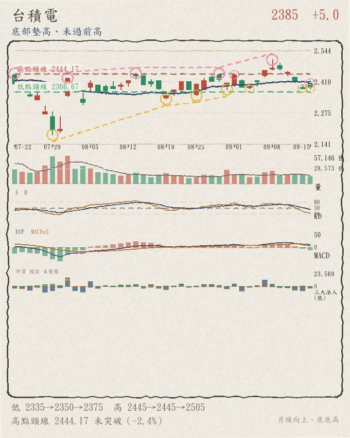
今天收紅、但成交量比平均少、跌破月線 2410.25，離高點頸線 2444.17 還差 2.4%，底部還在墊高（但高點沒同步創高）。
- 月線位置：收盤 2385 在月線 2410.25 之下；5 日線 2418 也在月線之上（短均在上）；月線向上、5 日線走平或向下
- 量能：成交量是 20 日均量的 0.86 倍，比 20 日均量少一些；收紅但量縮，量價背離
- 關鍵價位：高點頸線 2444.17 還沒突破，差 2.4%；最近轉折高點 2505（低於 4.8%）；最近轉折低點 2375（高於 0.4%）
- 轉折結構：低點 2335、2350、2375 墊高 1.7%（底底高），但高點 2445、2445、2505 沒有同步創高；還沒確認的轉折低點 09-14 2380、09-15 2380；還沒確認的轉折高點 09-01 2440、09-15 2405（圖上虛線小圈）
高點墊高、底部不穩 成交金額 279.34 億・全榜第 2 名（上市第 2 名）
好條件 3/8：站上月線、月線向上、頭頭高
不好條件 4/8：今日下跌、相對大盤弱、外資賣超、收盤跌破前一日低點
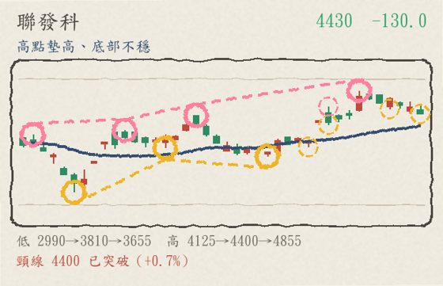
今天收黑、成交量也比平均少、站上月線 4214.5，離高點頸線 4482.5 還差 1.2%，高點還在墊高（但底部沒同步墊高）。
- 月線位置：收盤 4430 在月線 4214.5 之上；5 日線 4584 也在月線之上（短均在上）；月線向上、5 日線向上
- 量能：成交量是 20 日均量的 0.84 倍，比 20 日均量少很多
- 關鍵價位：高點頸線 4482.5 還沒突破，差 1.2%；最近轉折高點 4855（低於 8.8%）；最近轉折低點 3655（高於 21.2%）
- 轉折結構：高點 4125、4400、4855 墊高 17.7%（頭頭高），但低點 2990、3810、3655 沒有同步墊高；還沒確認的轉折低點 09-10 4520、09-15 4430；還沒確認的轉折高點 09-02 4565（圖上虛線小圈）
底部墊高、未過前高 成交金額 248.08 億・全榜第 3 名（上市第 3 名）
好條件 4/8：底底高、相對大盤強、外資買超、量價攻擊（收紅＋大量）
不好條件 3/8：跌破前低、在月線之下、月線下彎
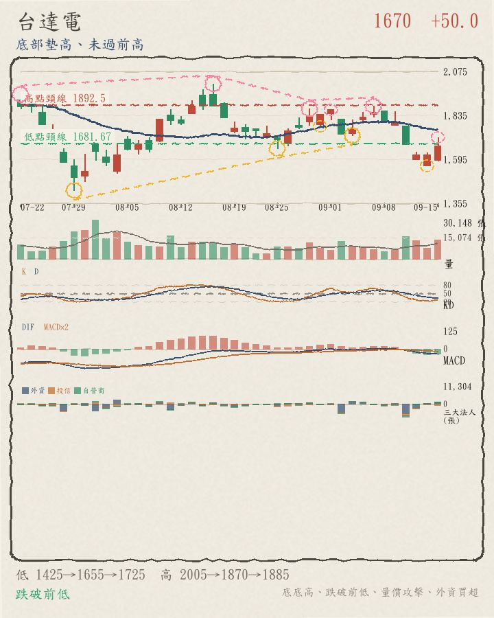
今天帶量收紅、跌破月線 1755.5，跌破前一個轉折低點（高點頸線 1873.33 還在收盤上方），底部還在墊高（但高點沒同步創高）。
- 月線位置：收盤 1670 在月線 1755.5 之下；5 日線 1676 也在月線之下（短均在下）；月線走平或向下、5 日線走平或向下
- 量能：成交量是 20 日均量的 1.61 倍，比 20 日均量大不少；收紅又量增，量價配合
- 關鍵價位：高點頸線 1873.33 還沒突破、還在收盤上方 10.9%；最近轉折高點 1885（低於 11.4%）；最近轉折低點 1725（低於 3.2%）
- 轉折結構：低點 1425、1655、1725 墊高 21.1%（底底高），但高點 2005、1870、1885 沒有同步創高；還沒確認的轉折低點 08-31 1775、09-14 1560；還沒確認的轉折高點 09-01 1865、09-15 1715（圖上虛線小圈）
上升趨勢（底底高＋頭頭高） 成交金額 178.84 億・全榜第 4 名（上市第 4 名）
好條件 6/8：月線向上、底底高、頭頭高、相對大盤強、外資買超、量價攻擊（收紅＋大量）
不好條件 2/8：跌破前低、在月線之下
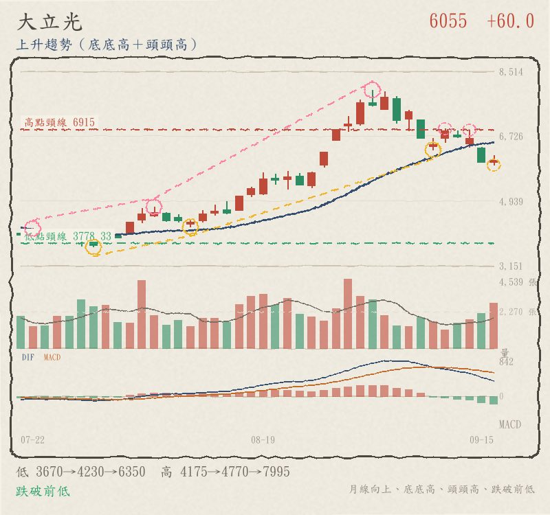
今天帶量收紅、跌破月線 6555，跌破前一個轉折低點（高點頸線 6915 還在收盤上方），轉折結構仍是底底高＋頭頭高。
- 月線位置：收盤 6055 在月線 6555 之下；5 日線 6460 也在月線之下（短均在下）；月線向上、5 日線走平或向下
- 量能：成交量是 20 日均量的 1.22 倍，比 20 日均量大不少；收紅又量增，量價配合
- 關鍵價位：高點頸線 6915 還沒突破、還在收盤上方 12.4%；最近轉折高點 7995（低於 24.3%）；最近轉折低點 6350（低於 4.6%）
- 轉折結構：低點 3670、4230、6350 一路墊高 73.0%、高點 4175、4770、7995 也一路墊高 91.5%，是底底高＋頭頭高；還沒確認的轉折低點 09-15 5930；還沒確認的轉折高點 09-09 6930、09-11 6900（圖上虛線小圈）
區間或轉弱 成交金額 161.18 億・全榜第 6 名（上市第 5 名）
好條件 0/8：無
不好條件 7/8：跌破前低、今日下跌、相對大盤弱、在月線之下、外資賣超、月線下彎、收盤跌破前一日低點
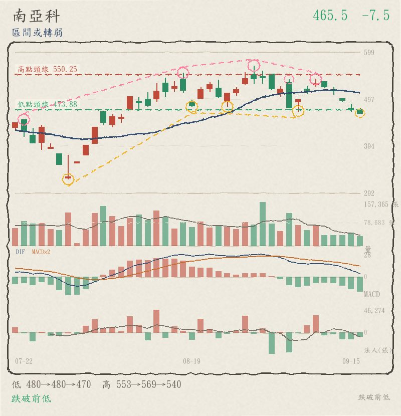
今天收黑、成交量也比平均少、跌破月線 510.25，跌破前一個轉折低點（高點頸線 550.25 還在收盤上方），轉折還沒走出明顯方向。
- 月線位置：收盤 465.5 在月線 510.25 之下；5 日線 493.9 也在月線之下（短均在下）；月線走平或向下、5 日線走平或向下
- 量能：成交量是 20 日均量的 0.48 倍，比 20 日均量少很多
- 關鍵價位：高點頸線 550.25 還沒突破、還在收盤上方 15.4%；最近轉折高點 540（低於 13.8%）；最近轉折低點 470（低於 1.0%）
- 轉折結構：低點 480、480、470 與高點 553、569、540 都沒有明顯遞增，屬於區間震盪或轉弱；還沒確認的轉折低點 09-15 465.5；還沒確認的轉折高點 09-03 539（圖上虛線小圈）
上升趨勢（底底高＋頭頭高） 成交金額 142.26 億・全榜第 7 名（上市第 6 名）
好條件 4/8：站上月線、月線向上、底底高、頭頭高
不好條件 3/8：今日下跌、相對大盤弱、外資賣超
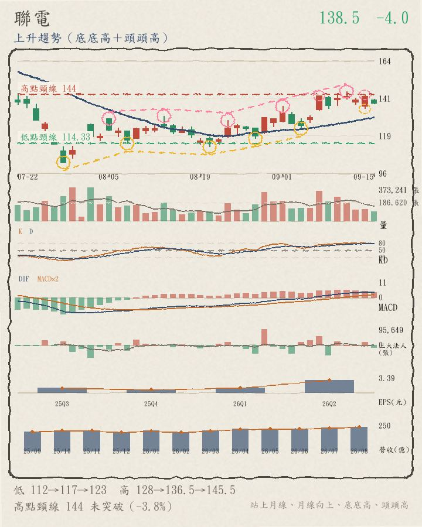
今天收黑、成交量也比平均少、站上月線 129.8，離高點頸線 144 還差 3.8%，轉折結構仍是底底高＋頭頭高。
- 月線位置：收盤 138.5 在月線 129.8 之上；5 日線 141.1 也在月線之上（短均在上）；月線向上、5 日線向上
- 量能：成交量是 20 日均量的 0.60 倍，比 20 日均量少很多
- 關鍵價位：高點頸線 144 還沒突破，差 3.8%；最近轉折高點 145.5（低於 4.8%）；最近轉折低點 123（高於 12.6%）
- 轉折結構：低點 112、117、123 一路墊高 9.8%、高點 128、136.5、145.5 也一路墊高 13.7%，是底底高＋頭頭高；還沒確認的轉折低點 09-14 135；還沒確認的轉折高點 09-07 143、09-14 143.5（圖上虛線小圈）
高點墊高、底部不穩 成交金額 136.18 億・全榜第 8 名（上市第 7 名）
好條件 3/8：站上月線、月線向上、頭頭高
不好條件 4/8：今日下跌、相對大盤弱、量增下跌（出貨）、外資賣超
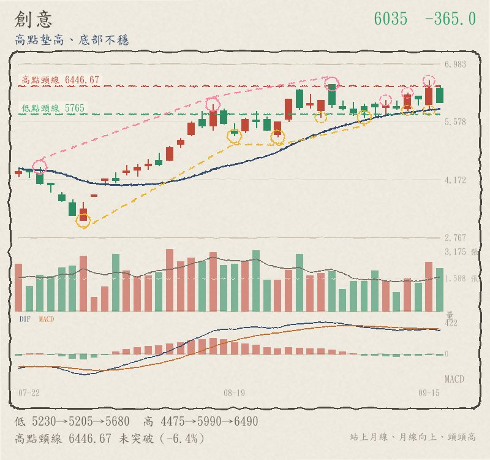
今天帶量收黑、站上月線 5886，離高點頸線 6532.5 還差 7.6%，高點還在墊高（但底部沒同步墊高）。
- 月線位置：收盤 6035 在月線 5886 之上；5 日線 6141 也在月線之上（短均在上）；月線向上、5 日線向上
- 量能：成交量是 20 日均量的 1.13 倍，比 20 日均量大一些；收黑卻量增，量價背離
- 關鍵價位：高點頸線 6532.5 還沒突破，差 7.6%；最近轉折高點 6490（低於 7.0%）；最近轉折低點 5680（高於 6.2%）
- 轉折結構：高點 4475、5990、6490 墊高 45.0%（頭頭高），但低點 5230、5205、5680 沒有同步墊高；還沒確認的轉折低點 09-10 5850、09-14 5850；還沒確認的轉折高點 09-10 6275、09-14 6575（圖上虛線小圈）
底部墊高、未過前高 成交金額 133 億・全榜第 9 名（上市第 8 名）
好條件 2/8：月線向上、底底高
不好條件 7/8：跌破前低、今日下跌、相對大盤弱、在月線之下、量增下跌（出貨）、外資賣超、收盤跌破前一日低點
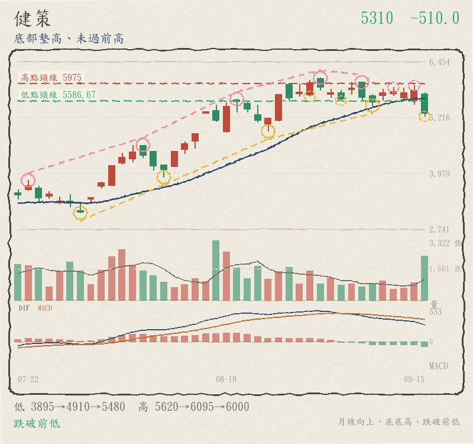
今天帶量收黑、跌破月線 5637.75，跌破前一個轉折低點（高點頸線 5975 還在收盤上方），底部還在墊高（但高點沒同步創高）。
- 月線位置：收盤 5310 在月線 5637.75 之下；5 日線 5689 也在月線之上（短均在上）；月線向上、5 日線走平或向下
- 量能：成交量是 20 日均量的 1.83 倍，比 20 日均量大不少；收黑卻量增，量價背離
- 關鍵價位：高點頸線 5975 還沒突破、還在收盤上方 11.1%；最近轉折高點 6000（低於 11.5%）；最近轉折低點 5480（低於 3.1%）
- 轉折結構：低點 3895、4910、5480 墊高 40.7%（底底高），但高點 5620、6095、6000 沒有同步創高；還沒確認的轉折低點 09-03 5590、09-15 5240；還沒確認的轉折高點 09-10 5885、09-14 5920（圖上虛線小圈）
底部墊高、未過前高 成交金額 125.03 億・全榜第 12 名（上市第 9 名）
好條件 3/8：站上月線、月線向上、底底高
不好條件 3/8：今日下跌、相對大盤弱、外資賣超
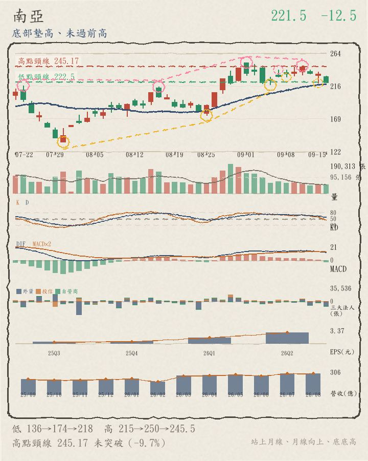
今天收黑、成交量也比平均少、站上月線 219.3，離高點頸線 245.17 還差 9.7%，底部還在墊高（但高點沒同步創高）。
- 月線位置：收盤 221.5 在月線 219.3 之上；5 日線 234.1 也在月線之上（短均在上）；月線向上、5 日線向上
- 量能：成交量是 20 日均量的 0.62 倍，比 20 日均量少很多
- 關鍵價位：高點頸線 245.17 還沒突破，差 9.7%；最近轉折高點 245.5（低於 9.8%）；最近轉折低點 218（高於 1.6%）
- 轉折結構：低點 135.5、174、218 墊高 60.9%（底底高），但高點 215、250、245.5 沒有同步創高；還沒確認的轉折低點 09-08 229、09-14 220.5；還沒確認的轉折高點 09-07 240（圖上虛線小圈）
區間或轉弱 成交金額 123.7 億・全榜第 13 名（上市第 10 名）
好條件 0/8：無
不好條件 5/8：今日下跌、相對大盤弱、在月線之下、外資賣超、月線下彎
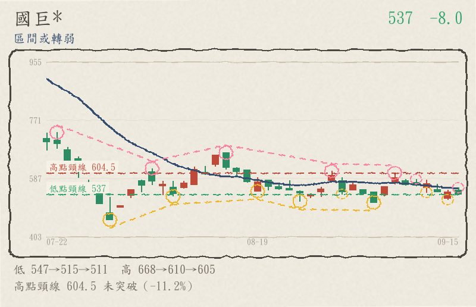
今天收黑、成交量也比平均少、跌破月線 556.05，離高點頸線 611 還差 12.1%，轉折還沒走出明顯方向。
- 月線位置：收盤 537 在月線 556.05 之下；5 日線 552.6 也在月線之下（短均在下）；月線走平或向下、5 日線走平或向下
- 量能：成交量是 20 日均量的 0.56 倍，比 20 日均量少很多
- 關鍵價位：高點頸線 611 還沒突破，差 12.1%；最近轉折高點 605（低於 11.2%）；最近轉折低點 511（高於 5.1%）
- 轉折結構：低點 547、515、511 與高點 668、610、605 都沒有明顯遞增，屬於區間震盪或轉弱；還沒確認的轉折低點 09-10 543、09-14 520；還沒確認的轉折高點 09-09 585、09-15 558（圖上虛線小圈）
區間或轉弱 成交金額 112.76 億・全榜第 14 名（上市第 11 名）
好條件 1/8：相對大盤強
不好條件 6/8：跌破前低、今日下跌、在月線之下、外資賣超、月線下彎、收盤跌破前一日低點
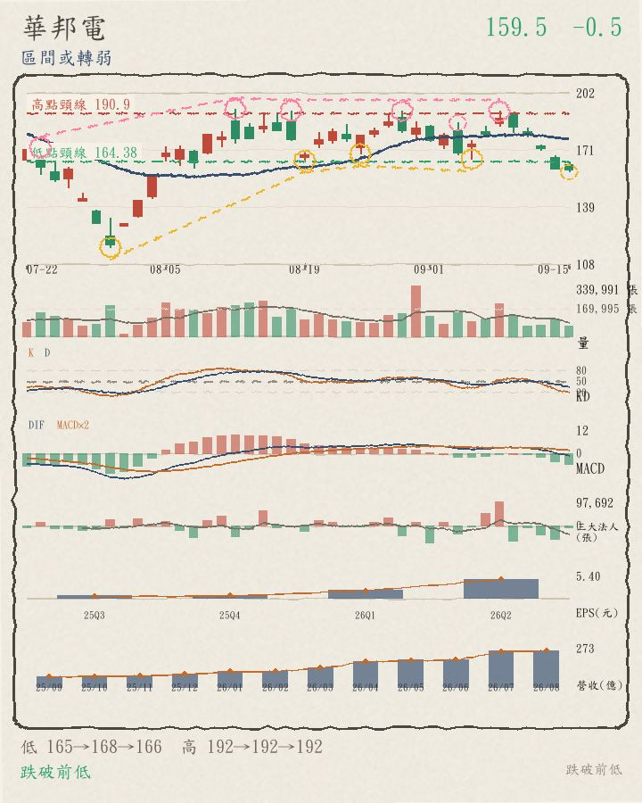
今天收黑、成交量也比平均少、跌破月線 176.625，跌破前一個轉折低點（高點頸線 190.9 還在收盤上方），轉折還沒走出明顯方向。
- 月線位置：收盤 159.5 在月線 176.625 之下；5 日線 170.7 也在月線之下（短均在下）；月線走平或向下、5 日線走平或向下
- 量能：成交量是 20 日均量的 0.53 倍，比 20 日均量少很多
- 關鍵價位：高點頸線 190.9 還沒突破、還在收盤上方 16.4%；最近轉折高點 192（低於 16.9%）；最近轉折低點 165.5（低於 3.6%）
- 轉折結構：低點 165、168.5、165.5 與高點 192、192、192 都沒有明顯遞增，屬於區間震盪或轉弱；還沒確認的轉折低點 09-15 158.5；還沒確認的轉折高點 09-03 185.5（圖上虛線小圈）
上升趨勢（底底高＋頭頭高） 成交金額 110.35 億・全榜第 15 名（上市第 12 名）
好條件 2/8：底底高、頭頭高
不好條件 8/8：跌破前低、今日下跌、相對大盤弱、在月線之下、量增下跌（出貨）、外資賣超、月線下彎、收盤跌破前一日低點
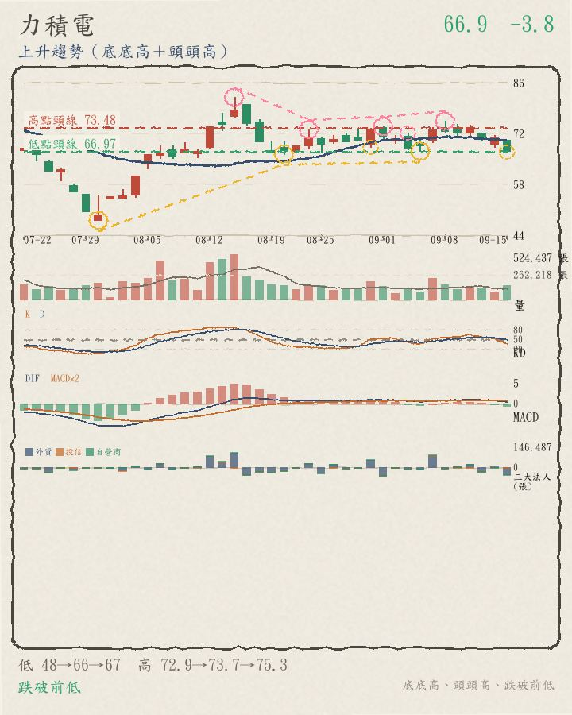
今天帶量收黑、跌破月線 70.095，跌破前一個轉折低點（高點頸線 73.48 還在收盤上方），轉折結構仍是底底高＋頭頭高。
- 月線位置：收盤 66.9 在月線 70.095 之下；5 日線 70.84 也在月線之上（短均在上）；月線走平或向下、5 日線向上
- 量能：成交量是 20 日均量的 1.13 倍，比 20 日均量大一些；收黑卻量增，量價背離
- 關鍵價位：高點頸線 73.48 還沒突破、還在收盤上方 9.0%；最近轉折高點 75.3（低於 11.2%）；最近轉折低點 67（低於 0.1%）
- 轉折結構：低點 48、66.2、67 一路墊高 39.6%、高點 72.9、73.7、75.3 也一路墊高 3.3%，是底底高＋頭頭高；還沒確認的轉折低點 08-31 68、09-15 66.7；還沒確認的轉折高點 09-03 72（圖上虛線小圈）
上升趨勢（底底高＋頭頭高） 成交金額 102.19 億・全榜第 16 名（上市第 13 名）
好條件 4/8：月線向上、底底高、頭頭高、外資買超
不好條件 5/8：跌破前低、今日下跌、相對大盤弱、在月線之下、收盤跌破前一日低點
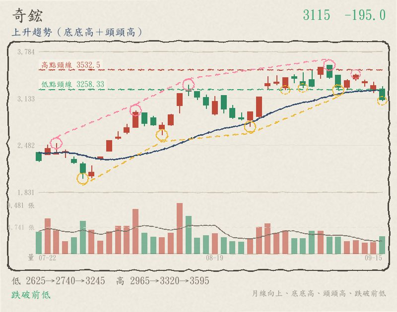
今天收黑、跌破月線 3248，跌破前一個轉折低點（高點頸線 3532.5 還在收盤上方），轉折結構仍是底底高＋頭頭高。
- 月線位置：收盤 3115 在月線 3248 之下；5 日線 3327 也在月線之上（短均在上）；月線向上、5 日線走平或向下
- 量能：成交量是 20 日均量的 0.99 倍，跟 20 日均量差不多
- 關鍵價位：高點頸線 3532.5 還沒突破、還在收盤上方 11.8%；最近轉折高點 3595（低於 13.4%）；最近轉折低點 3245（低於 4.0%）
- 轉折結構：低點 2625、2740、3245 一路墊高 23.6%、高點 2965、3320、3595 也一路墊高 21.2%，是底底高＋頭頭高；還沒確認的轉折低點 09-02 3280、09-15 3100；還沒確認的轉折高點 09-10 3470（圖上虛線小圈）
區間或轉弱 成交金額 93.52 億・全榜第 17 名（上市第 14 名）
好條件 0/8：無
不好條件 5/8：今日下跌、相對大盤弱、在月線之下、外資賣超、月線下彎
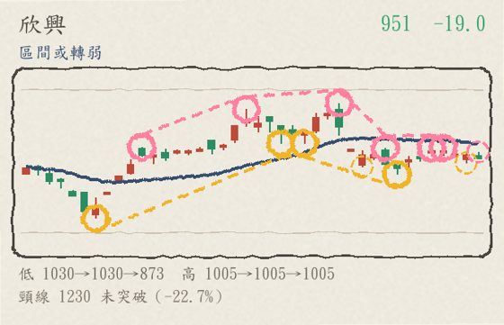
今天收黑、成交量也比平均少、跌破月線 1026.55，離高點頸線 1000.25 還差 4.9%，轉折還沒走出明顯方向。
- 月線位置：收盤 951 在月線 1026.55 之下；5 日線 977 也在月線之下（短均在下）；月線走平或向下、5 日線向上
- 量能：成交量是 20 日均量的 0.40 倍，比 20 日均量少很多
- 關鍵價位：高點頸線 1000.25 還沒突破，差 4.9%；最近轉折高點 1005（低於 5.4%）；最近轉折低點 873（高於 8.9%）
- 轉折結構：低點 1030、1030、873 與高點 1005、1005、1005 都沒有明顯遞增，屬於區間震盪或轉弱；還沒確認的轉折低點 09-01 911、09-14 932；還沒確認的轉折高點 09-15 986（圖上虛線小圈）
臻鼎-KY 4958 上市
477.5 -12.0
上升趨勢（底底高＋頭頭高） 成交金額 92.71 億・全榜第 18 名（上市第 15 名）
好條件 3/8：月線向上、底底高、頭頭高
不好條件 4/8：今日下跌、相對大盤弱、在月線之下、外資賣超
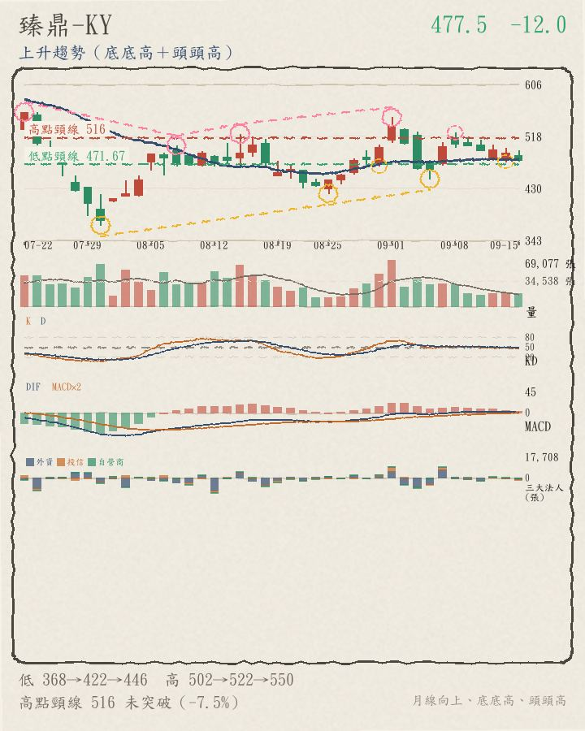
今天收黑、成交量也比平均少、跌破月線 479.225，離高點頸線 516 還差 7.5%，轉折結構仍是底底高＋頭頭高。
- 月線位置：收盤 477.5 在月線 479.225 之下；5 日線 491.7 也在月線之上（短均在上）；月線向上、5 日線向上
- 量能：成交量是 20 日均量的 0.67 倍，比 20 日均量少很多
- 關鍵價位：高點頸線 516 還沒突破，差 7.5%；最近轉折高點 550（低於 13.2%）；最近轉折低點 446.5（高於 6.9%）
- 轉折結構：低點 368、421.5、446.5 一路墊高 21.3%、高點 502、522、550 也一路墊高 9.6%，是底底高＋頭頭高；還沒確認的轉折低點 08-31 468、09-14 475.5；還沒確認的轉折高點 09-08 524（圖上虛線小圈）
高點墊高、底部不穩 成交金額 91.79 億・全榜第 19 名（上市第 16 名）
好條件 3/8：站上月線、月線向上、頭頭高
不好條件 4/8：今日下跌、相對大盤弱、量增下跌（出貨）、外資賣超
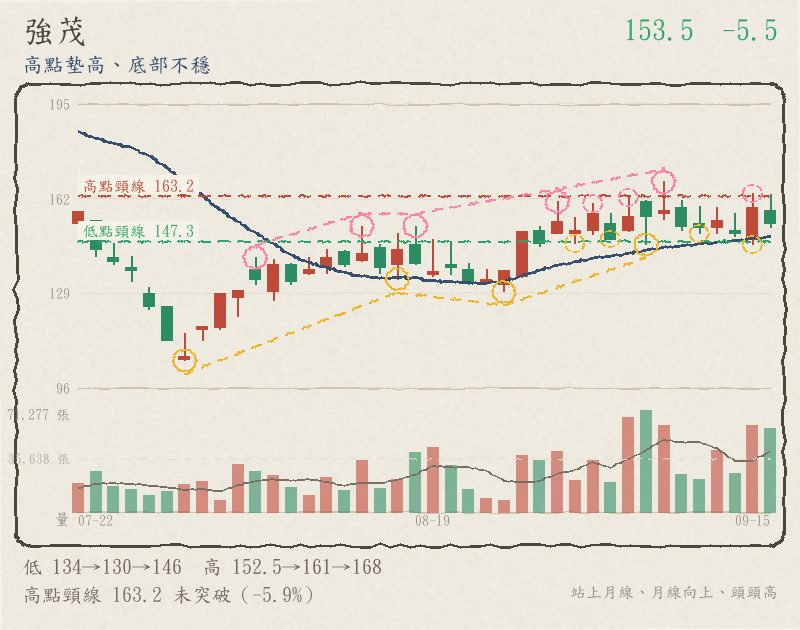
今天帶量收黑、站上月線 148.875，離高點頸線 162 還差 5.2%，高點還在墊高（但底部沒同步墊高）。
- 月線位置：收盤 153.5 在月線 148.875 之上；5 日線 153.8 也在月線之上（短均在上）；月線向上、5 日線走平或向下
- 量能：成交量是 20 日均量的 1.60 倍，比 20 日均量大不少；收黑卻量增，量價背離
- 關鍵價位：高點頸線 162 還沒突破，差 5.2%；最近轉折高點 168（低於 8.6%）；最近轉折低點 146（高於 5.1%）
- 轉折結構：高點 152.5、161、168 墊高 10.2%（頭頭高），但低點 134、129.5、146 沒有同步墊高；還沒確認的轉折低點 09-09 150、09-14 146；還沒確認的轉折高點 09-03 162.5、09-14 164（圖上虛線小圈）
世芯-KY 3661 上市
3355 -235.0
區間或轉弱 成交金額 91.77 億・全榜第 20 名（上市第 17 名）
好條件 0/8：無
不好條件 8/8：跌破前低、今日下跌、相對大盤弱、在月線之下、量增下跌（出貨）、外資賣超、月線下彎、收盤跌破前一日低點
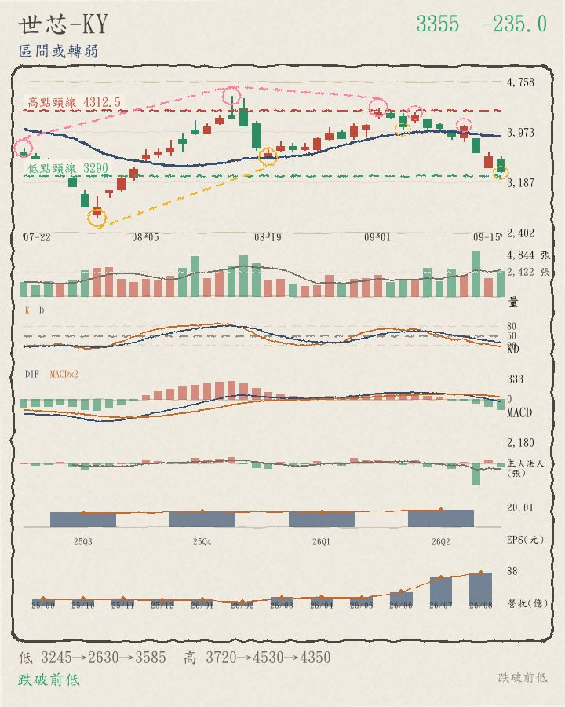
今天帶量收黑、跌破月線 3901，跌破前一個轉折低點（高點頸線 4385 還在收盤上方），轉折還沒走出明顯方向。
- 月線位置：收盤 3355 在月線 3901 之下；5 日線 3711 也在月線之下（短均在下）；月線走平或向下、5 日線走平或向下
- 量能：成交量是 20 日均量的 1.29 倍，比 20 日均量大不少；收黑卻量增，量價背離
- 關鍵價位：高點頸線 4385 還沒突破、還在收盤上方 23.5%；最近轉折高點 4350（低於 22.9%）；最近轉折低點 3585（低於 6.4%）
- 轉折結構：低點 3245、2630、3585 與高點 3720、4530、4350 都沒有明顯遞增，屬於區間震盪或轉弱；還沒確認的轉折低點 09-03 4010、09-15 3335；還沒確認的轉折高點 09-04 4275、09-10 4075（圖上虛線小圈）
上升趨勢（底底高＋頭頭高） 成交金額 88.54 億・全榜第 22 名（上市第 18 名）
好條件 5/8：站上月線、月線向上、底底高、頭頭高、外資買超
不好條件 5/8：跌破前低、今日下跌、相對大盤弱、量增下跌（出貨）、收盤跌破前一日低點
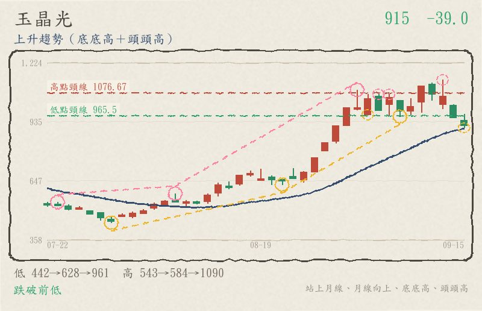
今天帶量收黑、站上月線 901.4，跌破前一個轉折低點（高點頸線 1076.67 還在收盤上方），轉折結構仍是底底高＋頭頭高。
- 月線位置：收盤 915 在月線 901.4 之上；5 日線 1021.8 也在月線之上（短均在上）；月線向上、5 日線向上
- 量能：成交量是 20 日均量的 1.60 倍，比 20 日均量大不少；收黑卻量增，量價背離
- 關鍵價位：高點頸線 1076.67 還沒突破、還在收盤上方 15.0%；最近轉折高點 1090（低於 16.1%）；最近轉折低點 961（低於 4.8%）
- 轉折結構：低點 442、628、961 一路墊高 117.4%、高點 543、584、1090 也一路墊高 100.7%，是底底高＋頭頭高；還沒確認的轉折低點 09-02 970、09-15 906；還沒確認的轉折高點 09-04 1070、09-11 1140（圖上虛線小圈）
區間或轉弱 成交金額 84.45 億・全榜第 24 名（上市第 19 名）
好條件 2/8：相對大盤強、外資買超
不好條件 2/8：在月線之下、月線下彎
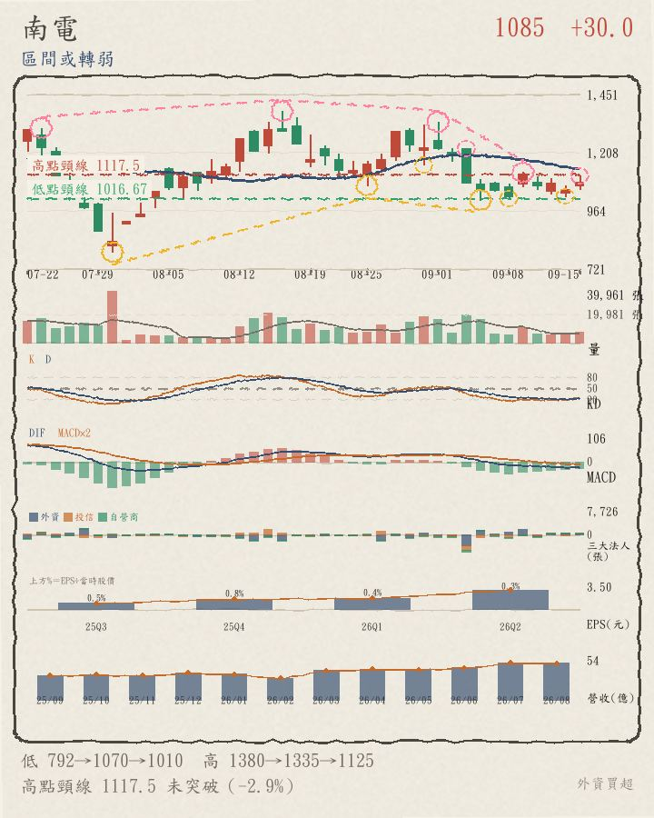
今天收紅、但成交量比平均少、跌破月線 1139.25，離高點頸線 1117.5 還差 2.9%，轉折還沒走出明顯方向。
- 月線位置：收盤 1085 在月線 1139.25 之下；5 日線 1080 也在月線之下（短均在下）；月線走平或向下、5 日線走平或向下
- 量能：成交量是 20 日均量的 0.68 倍，比 20 日均量少很多；收紅但量縮，量價背離
- 關鍵價位：高點頸線 1117.5 還沒突破，差 2.9%；最近轉折高點 1125（低於 3.6%）；最近轉折低點 1010（高於 7.4%）
- 轉折結構：低點 792、1070、1010 與高點 1380、1335、1125 都沒有明顯遞增，屬於區間震盪或轉弱；還沒確認的轉折低點 09-08 1015、09-14 1025；還沒確認的轉折高點 09-03 1225、09-15 1110（圖上虛線小圈）
區間或轉弱 成交金額 80.13 億・全榜第 25 名（上市第 20 名）
好條件 1/8：月線向上
不好條件 5/8：今日下跌、相對大盤弱、在月線之下、外資賣超、收盤跌破前一日低點
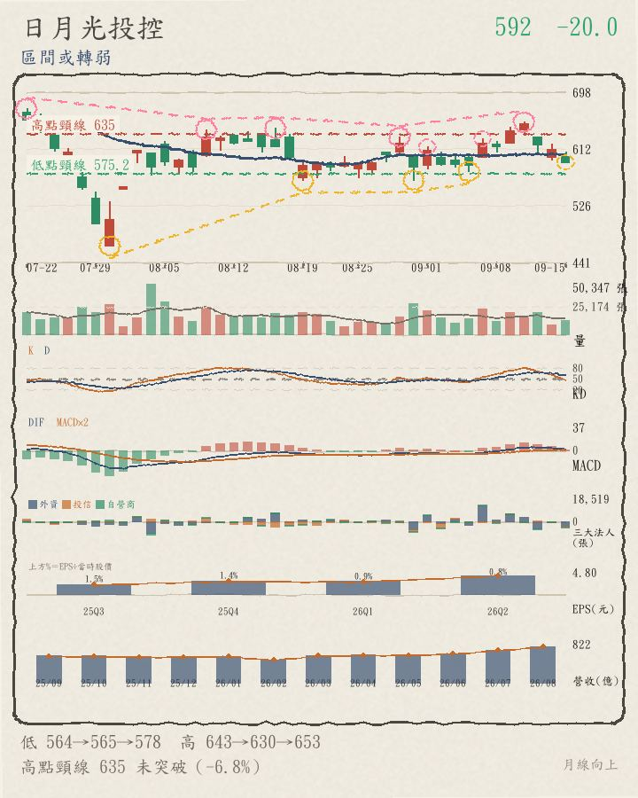
今天收黑、成交量也比平均少、跌破月線 603.85，離高點頸線 635 還差 6.8%，轉折還沒走出明顯方向。
- 月線位置：收盤 592 在月線 603.85 之下；5 日線 622.4 也在月線之上（短均在上）；月線向上、5 日線向上
- 量能：成交量是 20 日均量的 0.79 倍，比 20 日均量少很多
- 關鍵價位：高點頸線 635 還沒突破，差 6.8%；最近轉折高點 653（低於 9.3%）；最近轉折低點 578（高於 2.4%）
- 轉折結構：低點 564、565、578 與高點 643、630、653 都沒有明顯遞增，屬於區間震盪或轉弱；還沒確認的轉折低點 09-15 592；還沒確認的轉折高點 09-01 615、09-07 628（圖上虛線小圈）
區間或轉弱 成交金額 79.4 億・全榜第 26 名（上市第 21 名）
好條件 0/8：無
不好條件 7/8：跌破前低、今日下跌、相對大盤弱、在月線之下、外資賣超、月線下彎、收盤跌破前一日低點
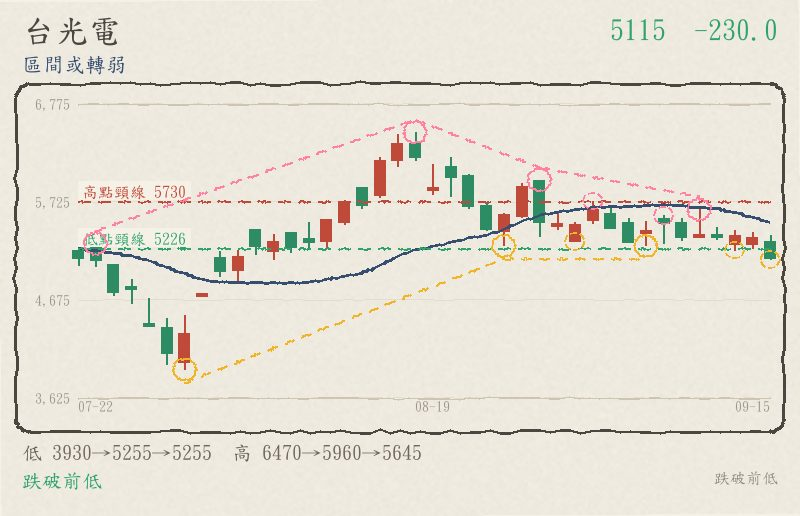
今天收黑、成交量也比平均少、跌破月線 5507，跌破前一個轉折低點（高點頸線 5780 還在收盤上方），轉折還沒走出明顯方向。
- 月線位置：收盤 5115 在月線 5507 之下；5 日線 5315 也在月線之下（短均在下）；月線走平或向下、5 日線走平或向下
- 量能：成交量是 20 日均量的 0.87 倍，比 20 日均量少一些
- 關鍵價位：高點頸線 5780 還沒突破、還在收盤上方 11.5%；最近轉折高點 5645（低於 9.4%）；最近轉折低點 5255（低於 2.7%）
- 轉折結構：低點 3930、5255、5255 與高點 6470、5960、5645 都沒有明顯遞增，屬於區間震盪或轉弱；還沒確認的轉折低點 09-11 5210、09-15 5110；還沒確認的轉折高點 09-01 5735、09-07 5580（圖上虛線小圈）
區間或轉弱 成交金額 66.77 億・全榜第 28 名（上市第 22 名）
好條件 2/8：站上月線、月線向上
不好條件 4/8：今日下跌、相對大盤弱、外資賣超、收盤跌破前一日低點
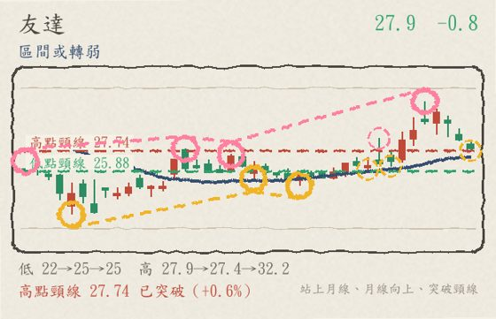
今天收黑、站上月線 27.232，離高點頸線 32.35 還差 13.8%，轉折還沒走出明顯方向。
- 月線位置：收盤 27.9 在月線 27.232 之上；5 日線 29.7 也在月線之上（短均在上）；月線向上、5 日線向上
- 量能：成交量是 20 日均量的 0.97 倍，跟 20 日均量差不多
- 關鍵價位：高點頸線 32.35 還沒突破，差 13.8%；最近轉折高點 32.2（低於 13.4%）；最近轉折低點 24.6（高於 13.4%）
- 轉折結構：低點 22、25.25、24.6 與高點 27.9、27.4、32.2 都沒有明顯遞增，屬於區間震盪或轉弱；還沒確認的轉折低點 09-04 26.35、09-15 27.75；還沒確認的轉折高點 09-03 28.85（圖上虛線小圈）
底部墊高、未過前高 成交金額 66.29 億・全榜第 29 名（上市第 23 名）
好條件 4/8：站上月線、月線向上、底底高、外資買超
不好條件 2/8：今日下跌、相對大盤弱
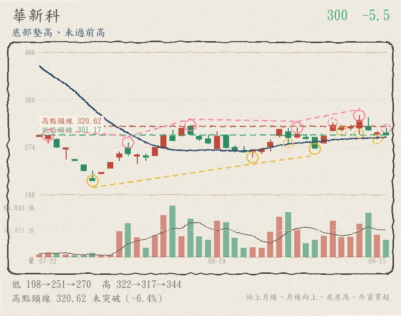
今天收黑、成交量也比平均少、站上月線 295.5，離高點頸線 320.62 還差 6.4%，底部還在墊高（但高點沒同步創高）。
- 月線位置：收盤 300 在月線 295.5 之上；5 日線 314.1 也在月線之上（短均在上）；月線向上、5 日線向上
- 量能：成交量是 20 日均量的 0.68 倍，比 20 日均量少很多
- 關鍵價位：高點頸線 320.62 還沒突破，差 6.4%；最近轉折高點 344（低於 12.8%）；最近轉折低點 270（高於 11.1%）
- 轉折結構：低點 198.5、251、270 墊高 36.0%（底底高），但高點 322、317、344 沒有同步創高；還沒確認的轉折低點 09-10 303、09-14 291；還沒確認的轉折高點 09-07 328、09-15 315.5（圖上虛線小圈）
底部墊高、未過前高 成交金額 65.86 億・全榜第 30 名（上市第 24 名）
好條件 2/8：月線向上、底底高
不好條件 6/8：跌破前低、今日下跌、相對大盤弱、在月線之下、外資賣超、收盤跌破前一日低點
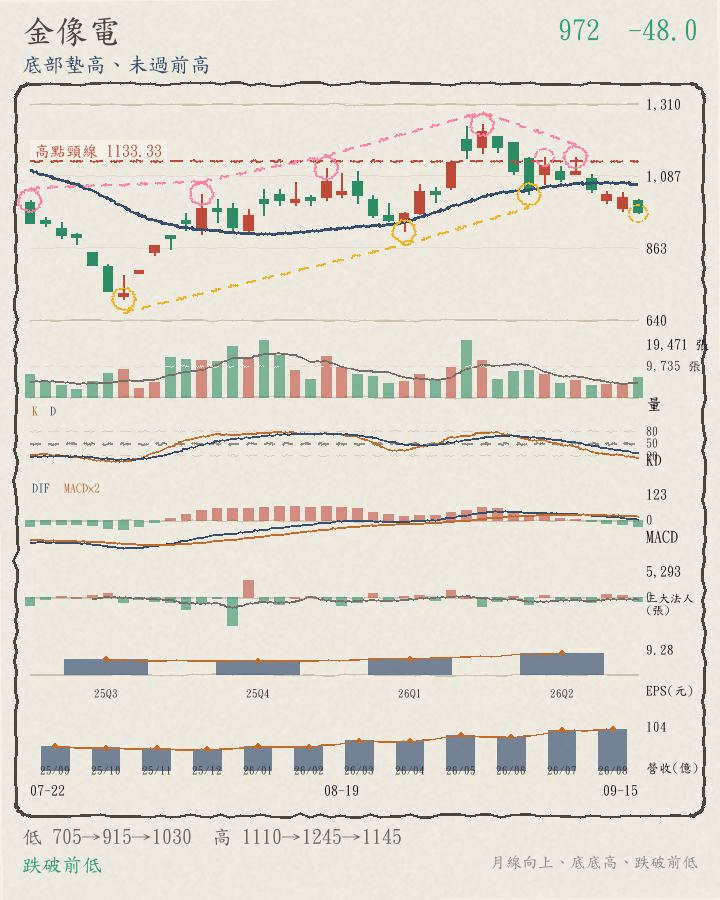
今天收黑、成交量也比平均少、跌破月線 1061.05，跌破前一個轉折低點（高點頸線 1133.33 還在收盤上方），底部還在墊高（但高點沒同步創高）。
- 月線位置：收盤 972 在月線 1061.05 之下；5 日線 1033.4 也在月線之下（短均在下）；月線向上、5 日線走平或向下
- 量能：成交量是 20 日均量的 0.84 倍，比 20 日均量少很多
- 關鍵價位：高點頸線 1133.33 還沒突破、還在收盤上方 14.2%；最近轉折高點 1145（低於 15.1%）；最近轉折低點 1030（低於 5.6%）
- 轉折結構：低點 705、915、1030 墊高 46.1%（底底高），但高點 1110、1245、1145 沒有同步創高；還沒確認的轉折低點 09-15 971；還沒確認的轉折高點 09-07 1145（圖上虛線小圈）
上升趨勢（底底高＋頭頭高） 成交金額 63.93 億・全榜第 31 名（上市第 25 名）
好條件 5/8：月線向上、底底高、頭頭高、突破頸線、相對大盤強
不好條件 2/8：在月線之下、外資賣超
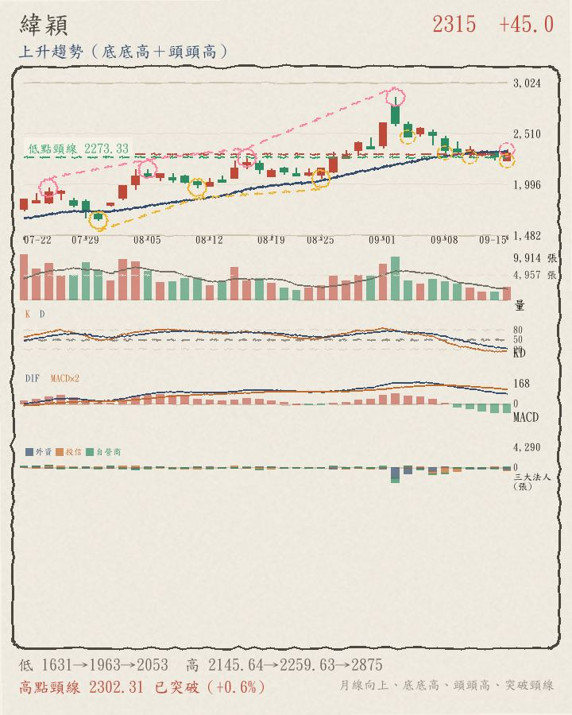
今天收紅、但成交量比平均少、跌破月線 2331.89，已站上高點頸線 2302.31，轉折結構仍是底底高＋頭頭高。
- 月線位置：收盤 2315 在月線 2331.89 之下；5 日線 2313 也在月線之下（短均在下）；月線向上、5 日線走平或向下
- 量能：成交量是 20 日均量的 0.69 倍，比 20 日均量少很多；收紅但量縮，量價背離
- 關鍵價位：高點頸線 2302.31 已站上；最近轉折高點 2875（低於 19.5%）；最近轉折低點 2053.44（高於 12.7%）
- 轉折結構：低點 1631.02、1962.92、2053.44 一路墊高 25.9%、高點 2145.64、2259.63、2875 也一路墊高 34.0%，是底底高＋頭頭高；還沒確認的轉折低點 09-10 2270、09-15 2235；還沒確認的轉折高點 09-15 2345（圖上虛線小圈）
區間或轉弱 成交金額 60.52 億・全榜第 33 名（上市第 26 名）
好條件 2/8：相對大盤強、外資買超
不好條件 3/8：今日下跌、在月線之下、月線下彎
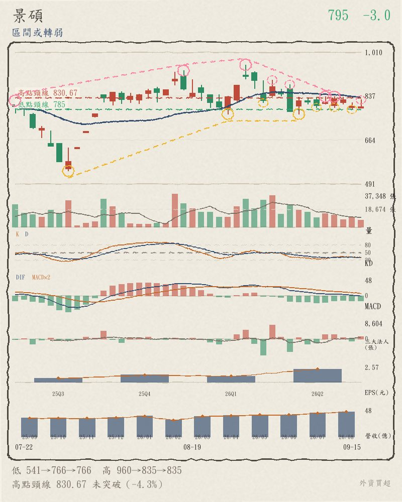
今天收黑、成交量也比平均少、跌破月線 831.75，離高點頸線 830.67 還差 4.3%，轉折還沒走出明顯方向。
- 月線位置：收盤 795 在月線 831.75 之下；5 日線 810.8 也在月線之下（短均在下）；月線走平或向下、5 日線走平或向下
- 量能：成交量是 20 日均量的 0.40 倍，比 20 日均量少很多
- 關鍵價位：高點頸線 830.67 還沒突破，差 4.3%；最近轉折高點 835（低於 4.8%）；最近轉折低點 766（高於 3.8%）
- 轉折結構：低點 541、766、766 與高點 960、835、835 都沒有明顯遞增，屬於區間震盪或轉弱；還沒確認的轉折低點 09-10 792、09-14 784；還沒確認的轉折高點 09-03 882、09-15 822（圖上虛線小圈）
區間或轉弱 成交金額 60.32 億・全榜第 34 名（上市第 27 名）
好條件 3/8：月線向上、相對大盤強、外資買超
不好條件 1/8：在月線之下
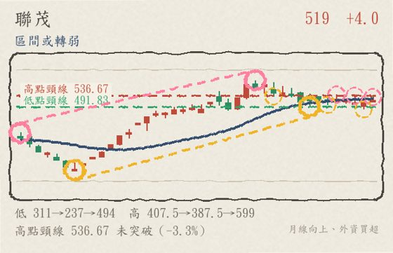
今天收紅、但成交量比平均少、跌破月線 525.925，離高點頸線 536.67 還差 3.3%，轉折還沒走出明顯方向。
- 月線位置：收盤 519 在月線 525.925 之下；5 日線 517 也在月線之下（短均在下）；月線向上、5 日線走平或向下
- 量能：成交量是 20 日均量的 0.71 倍，比 20 日均量少很多；收紅但量縮，量價背離
- 關鍵價位：高點頸線 536.67 還沒突破，差 3.3%；最近轉折高點 599（低於 13.4%）；最近轉折低點 493.5（高於 5.2%）
- 轉折結構：低點 311、237、493.5 與高點 407.5、387.5、599 都沒有明顯遞增，屬於區間震盪或轉弱；還沒確認的轉折低點 09-08 500、09-14 482；還沒確認的轉折高點 09-11 537、09-15 531（圖上虛線小圈）
區間或轉弱 成交金額 51.38 億・全榜第 38 名（上市第 28 名）
好條件 1/8：相對大盤強
不好條件 3/8：在月線之下、外資賣超、月線下彎
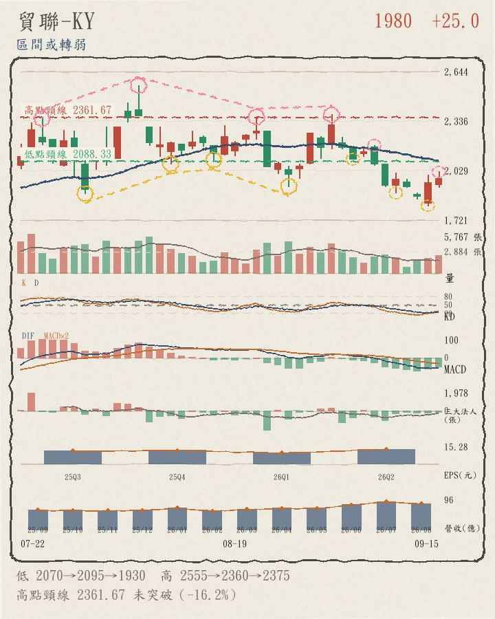
今天收紅、跌破月線 2089.5，離高點頸線 2361.67 還差 16.2%，轉折還沒走出明顯方向。
- 月線位置：收盤 1980 在月線 2089.5 之下；5 日線 1943 也在月線之下（短均在下）；月線走平或向下、5 日線走平或向下
- 量能：成交量是 20 日均量的 0.96 倍，跟 20 日均量差不多
- 關鍵價位：高點頸線 2361.67 還沒突破，差 16.2%；最近轉折高點 2375（低於 16.6%）；最近轉折低點 1930（高於 2.6%）
- 轉折結構：低點 2070、2095、1930 與高點 2555、2360、2375 都沒有明顯遞增，屬於區間震盪或轉弱；還沒確認的轉折低點 09-09 1890、09-14 1810；還沒確認的轉折高點 09-07 2185、09-15 2020（圖上虛線小圈）
上升趨勢（底底高＋頭頭高） 成交金額 49.86 億・全榜第 39 名（上市第 29 名）
好條件 3/8：月線向上、底底高、頭頭高
不好條件 5/8：跌破前低、今日下跌、相對大盤弱、在月線之下、外資賣超
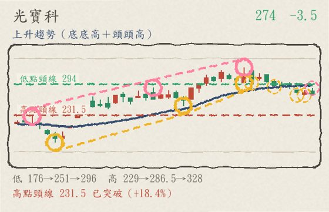
今天收黑、成交量也比平均少、跌破月線 291.975，跌破前一個轉折低點（高點頸線 286.25 還在收盤上方），轉折結構仍是底底高＋頭頭高。
- 月線位置：收盤 274 在月線 291.975 之下；5 日線 282.4 也在月線之下（短均在下）；月線向上、5 日線走平或向下
- 量能：成交量是 20 日均量的 0.57 倍，比 20 日均量少很多
- 關鍵價位：高點頸線 286.25 還沒突破、還在收盤上方 4.3%；最近轉折高點 328（低於 16.5%）；最近轉折低點 296.5（低於 7.6%）
- 轉折結構：低點 176.5、251、296.5 一路墊高 68.0%、高點 229、286.5、328 也一路墊高 43.2%，是底底高＋頭頭高；還沒確認的轉折低點 09-11 272、09-14 272；還沒確認的轉折高點 09-15 286（圖上虛線小圈）
底部墊高、未過前高 成交金額 47.68 億・全榜第 40 名（上市第 30 名）
好條件 3/8：月線向上、底底高、突破頸線
不好條件 5/8：跌破前低、今日下跌、相對大盤弱、在月線之下、外資賣超
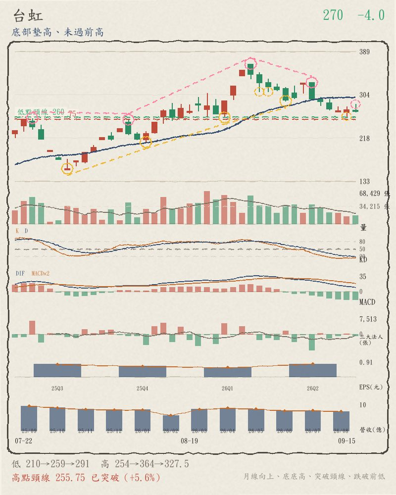
今天收黑、成交量也比平均少、跌破月線 298.075，已站上高點頸線 255.75，底部還在墊高（但高點沒同步創高）。
- 月線位置：收盤 270 在月線 298.075 之下；5 日線 276.1 也在月線之下（短均在下）；月線向上、5 日線走平或向下
- 量能：成交量是 20 日均量的 0.46 倍，比 20 日均量少很多
- 關鍵價位：高點頸線 255.75 已站上；最近轉折高點 327.5（低於 17.6%）；最近轉折低點 291（低於 7.2%）
- 轉折結構：低點 210.5、259、291 墊高 38.2%（底底高），但高點 254、364、327.5 沒有同步創高；還沒確認的轉折低點 09-01 309.5、09-14 261；還沒確認的轉折高點 09-15 285（圖上虛線小圈）
高點墊高、底部不穩 成交金額 45.88 億・全榜第 41 名（上市第 31 名）
好條件 4/8：站上月線、月線向上、頭頭高、相對大盤強
不好條件 2/8：今日下跌、外資賣超
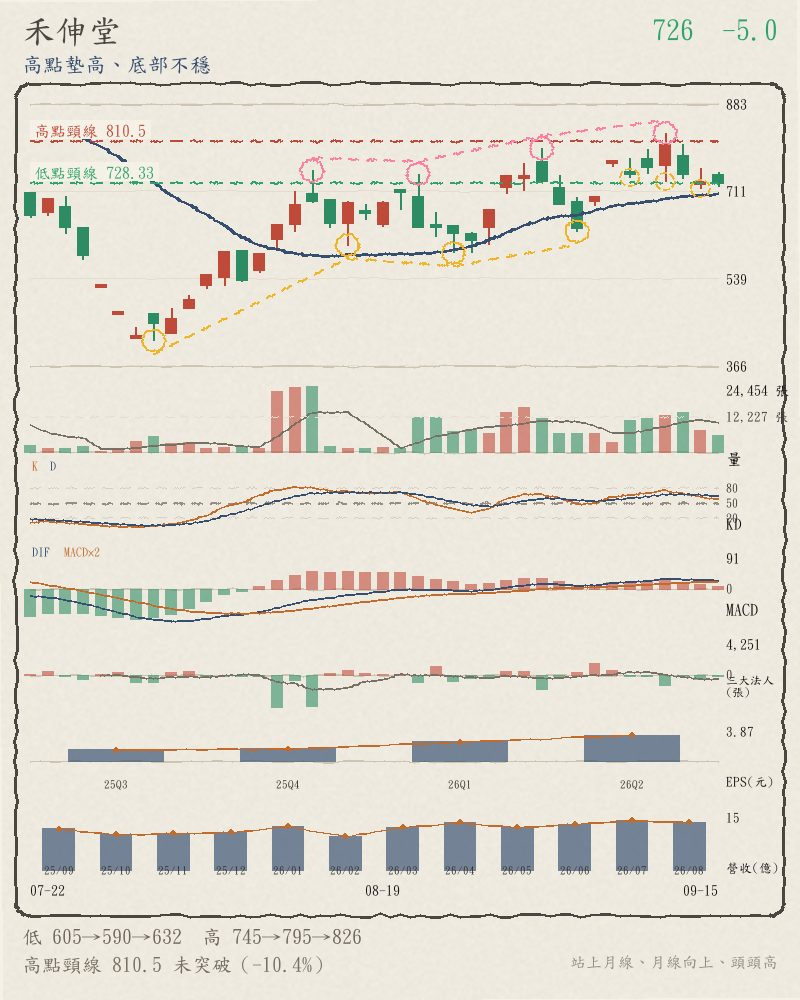
今天收黑、成交量也比平均少、站上月線 705.95，離高點頸線 810.5 還差 10.4%，高點還在墊高（但底部沒同步墊高）。
- 月線位置：收盤 726 在月線 705.95 之上；5 日線 752.4 也在月線之上（短均在上）；月線向上、5 日線向上
- 量能：成交量是 20 日均量的 0.69 倍，比 20 日均量少很多
- 關鍵價位：高點頸線 810.5 還沒突破，差 10.4%；最近轉折高點 826（低於 12.1%）；最近轉折低點 632（高於 14.9%）
- 轉折結構：高點 745、795、826 墊高 10.9%（頭頭高），但低點 605、590、632 沒有同步墊高；還沒確認的轉折低點 09-10 730、09-14 717（圖上虛線小圈）
剛突破前高 成交金額 43.06 億・全榜第 43 名（上市第 32 名）
好條件 5/8：站上月線、月線向上、頭頭高、突破頸線、相對大盤強
不好條件 3/8：今日下跌、量增下跌（出貨）、外資賣超
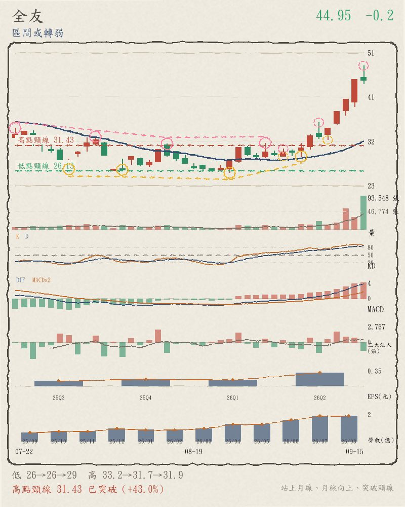
今天帶量收黑、站上月線 32.275，已站上高點頸線 31.2，高點還在墊高（但底部沒同步墊高）。
- 月線位置：收盤 44.95 在月線 32.275 之上；5 日線 40.93 也在月線之上（短均在上）；月線向上、5 日線向上
- 量能：成交量是 20 日均量的 8.16 倍，比 20 日均量大不少；收黑卻量增，量價背離
- 關鍵價位：高點頸線 31.2 已站上；最近轉折高點 31.9（高於 40.9%）；最近轉折低點 29.05（高於 54.7%）
- 轉折結構：高點 33.2、31.7、31.9 墊高 50.6%（頭頭高），但低點 26.3、25.7、29.05 沒有同步墊高；還沒確認的轉折低點 09-02 29.05、09-09 32.55；還沒確認的轉折高點 09-08 36.2、09-15 48.05（圖上虛線小圈）
區間或轉弱 成交金額 42.29 億・全榜第 44 名（上市第 33 名）
好條件 0/8：無
不好條件 6/8：跌破前低、今日下跌、相對大盤弱、在月線之下、外資賣超、月線下彎
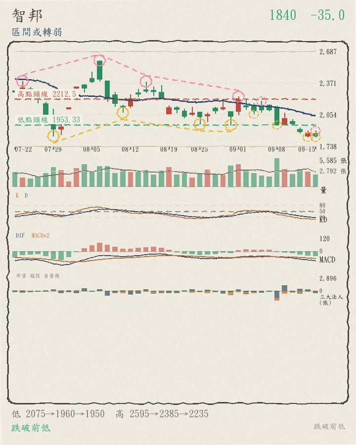
今天收黑、成交量也比平均少、跌破月線 2042，跌破前一個轉折低點（高點頸線 2212.5 還在收盤上方），轉折還沒走出明顯方向。
- 月線位置：收盤 1840 在月線 2042 之下；5 日線 1916 也在月線之下（短均在下）；月線走平或向下、5 日線走平或向下
- 量能：成交量是 20 日均量的 0.76 倍，比 20 日均量少很多
- 關鍵價位：高點頸線 2212.5 還沒突破、還在收盤上方 16.8%；最近轉折高點 2235（低於 17.7%）；最近轉折低點 1950（低於 5.6%）
- 轉折結構：低點 2075、1960、1950 與高點 2595、2385、2235 都沒有明顯遞增，屬於區間震盪或轉弱；還沒確認的轉折低點 09-14 1830、09-15 1830；還沒確認的轉折高點 09-04 2190、09-15 1895（圖上虛線小圈）
上升趨勢（底底高＋頭頭高） 成交金額 41.06 億・全榜第 46 名（上市第 34 名）
好條件 7/8：站上月線、月線向上、底底高、頭頭高、相對大盤強、外資買超、量價攻擊（收紅＋大量）
不好條件 0/8：無
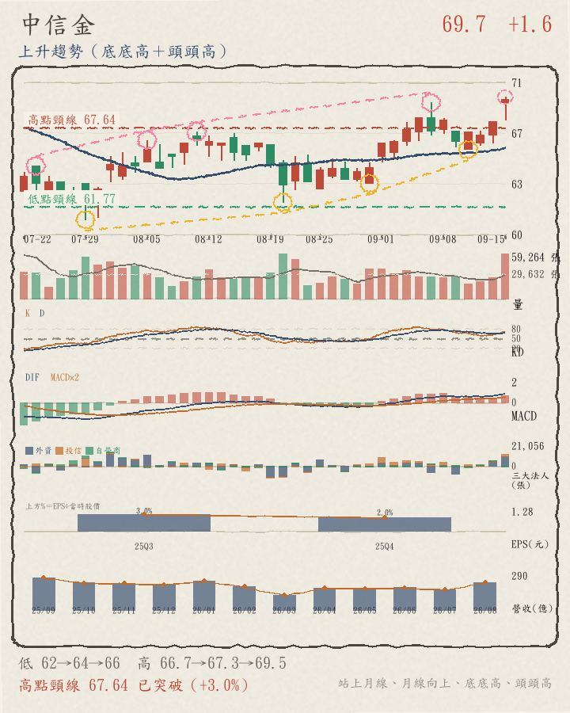
今天帶量收紅、站上月線 66.115，離高點頸線 70.53 還差 1.2%，轉折結構仍是底底高＋頭頭高。
- 月線位置：收盤 69.7 在月線 66.115 之上；5 日線 67.76 也在月線之上（短均在上）；月線向上、5 日線向上
- 量能：成交量是 20 日均量的 1.93 倍，比 20 日均量大不少；收紅又量增，量價配合
- 關鍵價位：高點頸線 70.53 還沒突破，差 1.2%；最近轉折高點 69.5（高於 0.3%）；最近轉折低點 66（高於 5.6%）
- 轉折結構：低點 62.1、63.5、66 一路墊高 6.3%、高點 66.7、67.3、69.5 也一路墊高 4.2%，是底底高＋頭頭高；還沒確認的轉折高點 09-15 69.9（圖上虛線小圈）
高點墊高、底部不穩 成交金額 40.68 億・全榜第 47 名（上市第 35 名）
好條件 1/8：頭頭高
不好條件 5/8：今日下跌、相對大盤弱、在月線之下、外資賣超、月線下彎
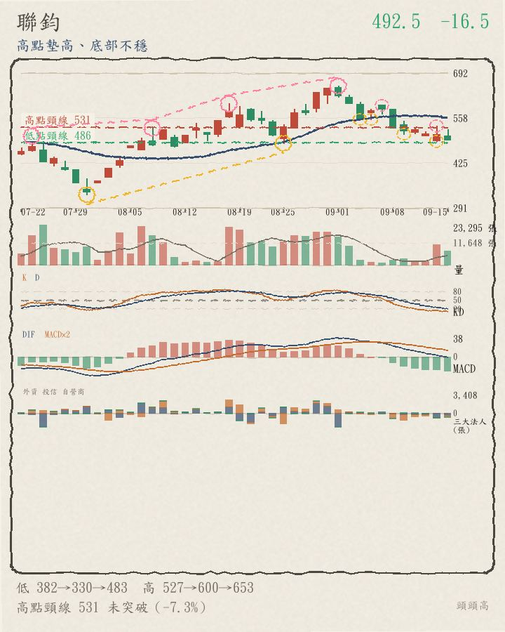
今天收黑、成交量也比平均少、跌破月線 558.675，離高點頸線 531 還差 7.3%，高點還在墊高（但底部沒同步墊高）。
- 月線位置：收盤 492.5 在月線 558.675 之下；5 日線 511.3 也在月線之下（短均在下）；月線走平或向下、5 日線走平或向下
- 量能：成交量是 20 日均量的 0.74 倍，比 20 日均量少很多
- 關鍵價位：高點頸線 531 還沒突破，差 7.3%；最近轉折高點 653（低於 24.6%）；最近轉折低點 483（高於 2.0%）
- 轉折結構：高點 527、600、653 墊高 23.9%（頭頭高），但低點 382.5、330、483 沒有同步墊高；還沒確認的轉折低點 09-09 510、09-14 489；還沒確認的轉折高點 09-07 596、09-14 535（圖上虛線小圈）
上升趨勢（底底高＋頭頭高） 成交金額 39.97 億・全榜第 48 名（上市第 36 名）
好條件 4/8：站上月線、月線向上、底底高、頭頭高
不好條件 4/8：今日下跌、相對大盤弱、量增下跌（出貨）、外資賣超
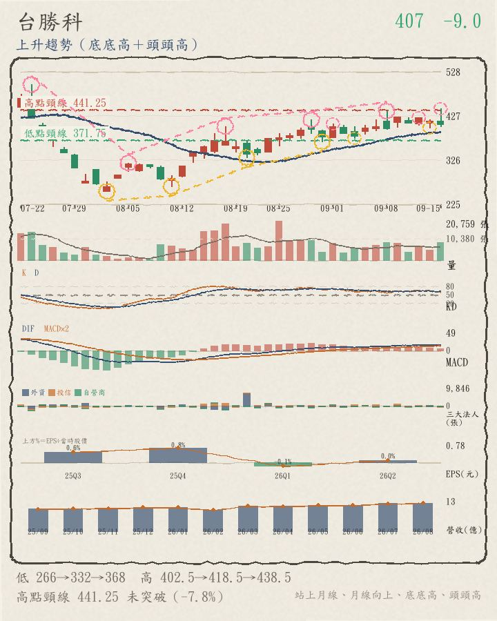
今天帶量收黑、站上月線 389.825，離高點頸線 441.25 還差 7.8%，轉折結構仍是底底高＋頭頭高。
- 月線位置：收盤 407 在月線 389.825 之上；5 日線 416 也在月線之上（短均在上）；月線向上、5 日線向上
- 量能：成交量是 20 日均量的 1.08 倍，比 20 日均量大一些；收黑卻量增，量價背離
- 關鍵價位：高點頸線 441.25 還沒突破，差 7.8%；最近轉折高點 438.5（低於 7.2%）；最近轉折低點 367.5（高於 10.7%）
- 轉折結構：低點 265.5、331.5、367.5 一路墊高 38.4%、高點 402.5、418.5、438.5 也一路墊高 8.9%，是底底高＋頭頭高；還沒確認的轉折低點 09-03 376、09-14 400；還沒確認的轉折高點 09-11 423.5、09-15 444（圖上虛線小圈）
區間或轉弱 成交金額 39.19 億・全榜第 49 名（上市第 37 名）
好條件 0/8：無
不好條件 5/8：今日下跌、相對大盤弱、在月線之下、外資賣超、月線下彎
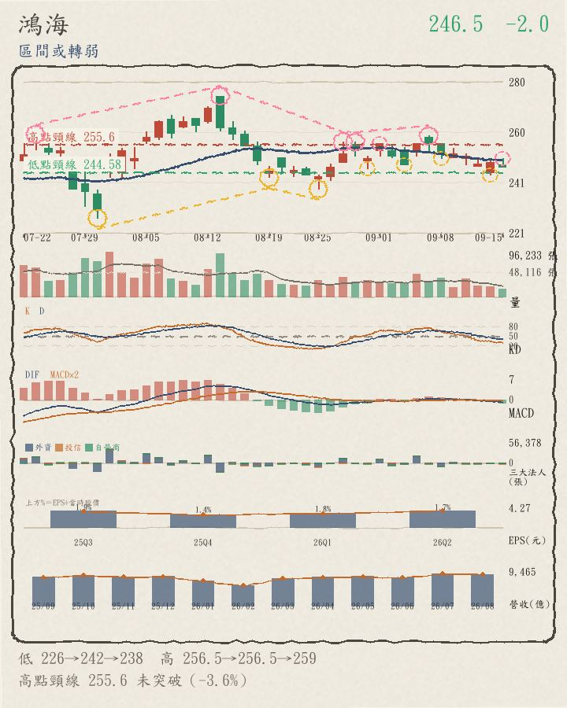
今天收黑、成交量也比平均少、跌破月線 249.45，離高點頸線 255.6 還差 3.6%，轉折還沒走出明顯方向。
- 月線位置：收盤 246.5 在月線 249.45 之下；5 日線 249.2 也在月線之下（短均在下）；月線走平或向下、5 日線走平或向下
- 量能：成交量是 20 日均量的 0.49 倍，比 20 日均量少很多
- 關鍵價位：高點頸線 255.6 還沒突破，差 3.6%；最近轉折高點 259（低於 4.8%）；最近轉折低點 238（高於 3.6%）
- 轉折結構：低點 226.5、242.5、238 與高點 256.5、256.5、259 都沒有明顯遞增，屬於區間震盪或轉弱；還沒確認的轉折低點 09-08 250、09-14 243.5；還沒確認的轉折高點 09-01 256、09-15 250（圖上虛線小圈）
區間或轉弱 成交金額 38.61 億・全榜第 51 名（上市第 38 名）
好條件 1/8：相對大盤強
不好條件 3/8：在月線之下、外資賣超、月線下彎
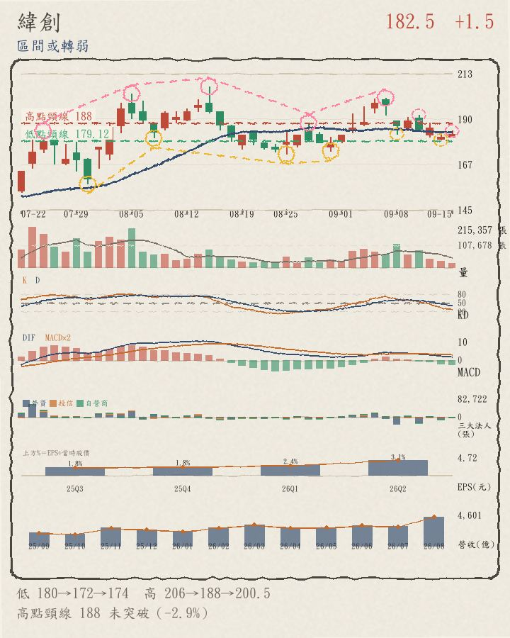
今天收紅、但成交量比平均少、跌破月線 183.475，離高點頸線 188 還差 2.9%，轉折還沒走出明顯方向。
- 月線位置：收盤 182.5 在月線 183.475 之下；5 日線 184.6 也在月線之上（短均在上）；月線走平或向下、5 日線走平或向下
- 量能：成交量是 20 日均量的 0.41 倍，比 20 日均量少很多；收紅但量縮，量價背離
- 關鍵價位：高點頸線 188 還沒突破，差 2.9%；最近轉折高點 200.5（低於 9.0%）；最近轉折低點 174（高於 4.9%）
- 轉折結構：低點 180.5、172.5、174 與高點 206、188、200.5 都沒有明顯遞增，屬於區間震盪或轉弱；還沒確認的轉折低點 09-08 182.5、09-14 179.5；還沒確認的轉折高點 09-10 192、09-15 184（圖上虛線小圈）
高點墊高、底部不穩 成交金額 37.38 億・全榜第 52 名（上市第 39 名）
好條件 2/8：月線向上、頭頭高
不好條件 6/8：跌破前低、今日下跌、相對大盤弱、在月線之下、外資賣超、收盤跌破前一日低點
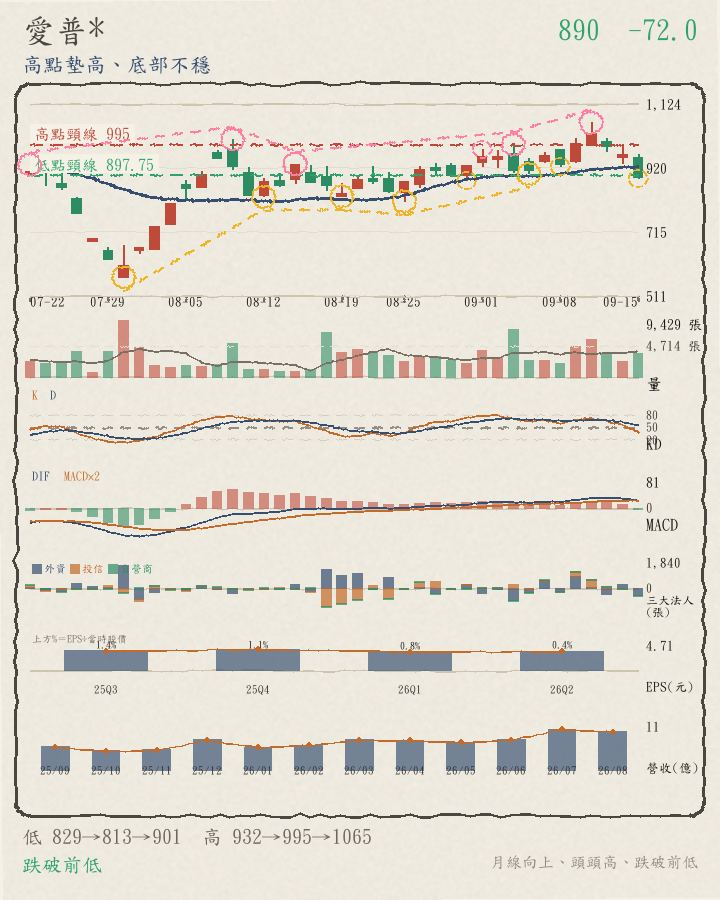
今天收黑、跌破月線 923.8，跌破前一個轉折低點（高點頸線 995 還在收盤上方），高點還在墊高（但底部沒同步墊高）。
- 月線位置：收盤 890 在月線 923.8 之下；5 日線 973.8 也在月線之上（短均在上）；月線向上、5 日線向上
- 量能：成交量是 20 日均量的 0.99 倍，跟 20 日均量差不多
- 關鍵價位：高點頸線 995 還沒突破、還在收盤上方 10.6%；最近轉折高點 1065（低於 16.4%）；最近轉折低點 901（低於 1.2%）
- 轉折結構：高點 932、995、1065 墊高 14.3%（頭頭高），但低點 829、813、901 沒有同步墊高；還沒確認的轉折低點 09-08 924、09-15 887；還沒確認的轉折高點 09-01 980（圖上虛線小圈）
底部墊高、未過前高 成交金額 37.16 億・全榜第 53 名（上市第 40 名）
好條件 3/8：月線向上、底底高、外資買超
不好條件 5/8：跌破前低、今日下跌、相對大盤弱、在月線之下、收盤跌破前一日低點
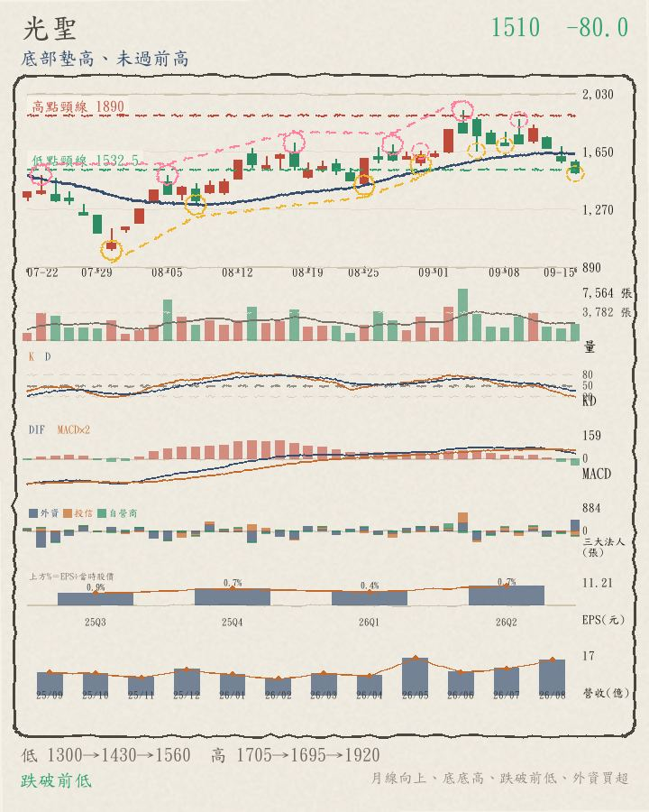
今天收黑、成交量也比平均少、跌破月線 1637.25，跌破前一個轉折低點（高點頸線 1890 還在收盤上方），底部還在墊高（但高點沒同步創高）。
- 月線位置：收盤 1510 在月線 1637.25 之下；5 日線 1654 也在月線之上（短均在上）；月線向上、5 日線走平或向下
- 量能：成交量是 20 日均量的 0.79 倍，比 20 日均量少很多
- 關鍵價位：高點頸線 1890 還沒突破、還在收盤上方 20.1%；最近轉折高點 1920（低於 21.4%）；最近轉折低點 1560（低於 3.2%）
- 轉折結構：低點 1300、1430、1560 墊高 20.0%（底底高），但高點 1705、1695、1920 沒有同步創高；還沒確認的轉折低點 09-08 1690、09-15 1505；還沒確認的轉折高點 08-31 1655、09-09 1860（圖上虛線小圈）
底部墊高、未過前高 成交金額 36.74 億・全榜第 54 名（上市第 41 名）
好條件 1/8：底底高
不好條件 6/8：跌破前低、今日下跌、相對大盤弱、在月線之下、外資賣超、月線下彎
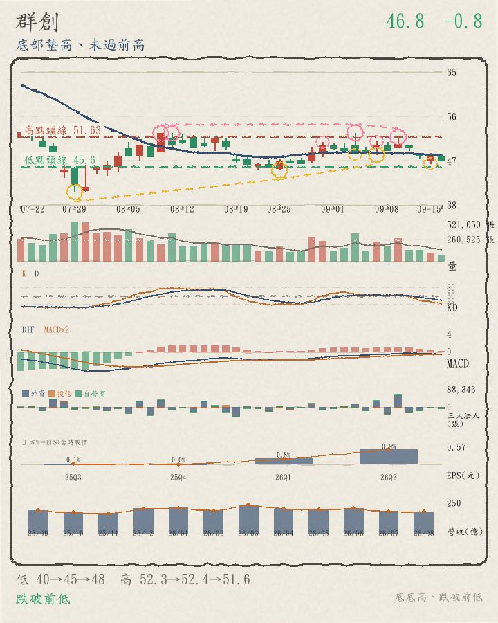
今天收黑、成交量也比平均少、跌破月線 47.872，跌破前一個轉折低點（高點頸線 51.63 還在收盤上方），底部還在墊高（但高點沒同步創高）。
- 月線位置：收盤 46.8 在月線 47.872 之下；5 日線 48.32 也在月線之上（短均在上）；月線走平或向下、5 日線走平或向下
- 量能：成交量是 20 日均量的 0.40 倍，比 20 日均量少很多
- 關鍵價位：高點頸線 51.63 還沒突破、還在收盤上方 9.4%；最近轉折高點 51.6（低於 9.3%）；最近轉折低點 48（低於 2.5%）
- 轉折結構：低點 40.5、44.95、48 墊高 18.5%（底底高），但高點 52.3、52.4、51.6 沒有同步創高；還沒確認的轉折低點 09-03 48.1、09-14 46.25；還沒確認的轉折高點 08-31 50.5、09-07 50.7（圖上虛線小圈）
底部墊高、突破前高 成交金額 35.19 億・全榜第 55 名（上市第 42 名）
好條件 5/8：站上月線、月線向上、底底高、頭頭高、突破頸線
不好條件 4/8：今日下跌、相對大盤弱、量增下跌（出貨）、外資賣超
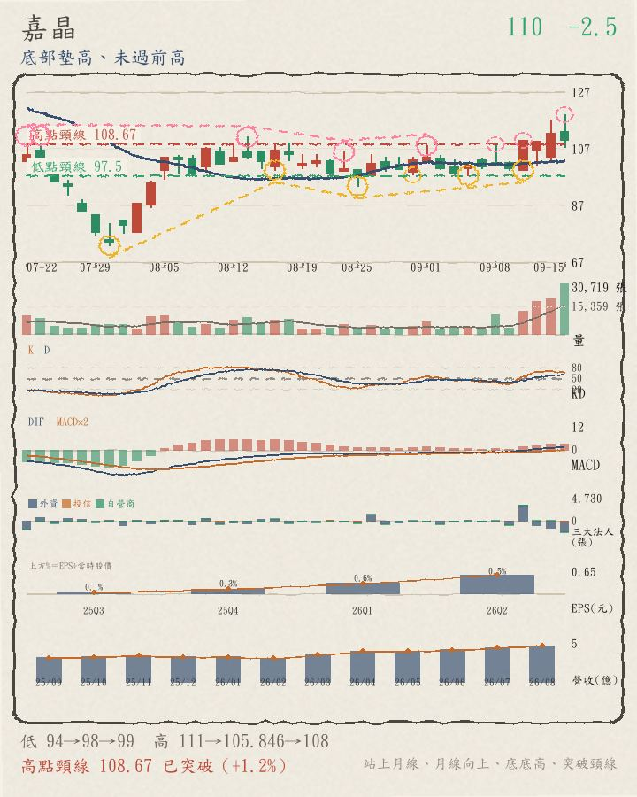
今天帶量收黑、站上月線 102.556，已站上高點頸線 109.38，轉折結構仍是底底高＋頭頭高。
- 月線位置：收盤 110 在月線 102.556 之上；5 日線 108.4 也在月線之上（短均在上）；月線向上、5 日線向上
- 量能：成交量是 20 日均量的 4.62 倍，比 20 日均量大不少；收黑卻量增，量價背離
- 關鍵價位：高點頸線 109.38 已站上；最近轉折高點 108（高於 1.9%）；最近轉折低點 99.3（高於 10.8%）
- 轉折結構：低點 93.7634、97.5、99.3 一路墊高 5.9%、高點 111、105.846、108 也一路墊高 10.2%，是底底高＋頭頭高；還沒確認的轉折低點 08-31 97.6；還沒確認的轉折高點 09-10 110、09-15 119（圖上虛線小圈）
高點墊高、底部不穩 成交金額 31.88 億・全榜第 58 名（上市第 43 名）
好條件 3/8：站上月線、月線向上、頭頭高
不好條件 3/8：今日下跌、相對大盤弱、外資賣超
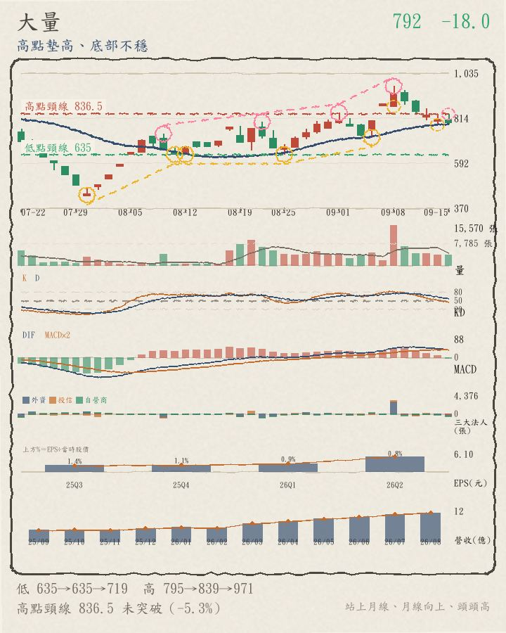
今天收黑、成交量也比平均少、站上月線 783，離高點頸線 836.5 還差 5.3%，高點還在墊高（但底部沒同步墊高）。
- 月線位置：收盤 792 在月線 783 之上；5 日線 835.6 也在月線之上（短均在上）；月線向上、5 日線向上
- 量能：成交量是 20 日均量的 0.69 倍，比 20 日均量少很多
- 關鍵價位：高點頸線 836.5 還沒突破，差 5.3%；最近轉折高點 971（低於 18.4%）；最近轉折低點 719（高於 10.2%）
- 轉折結構：高點 795、839、971 墊高 22.1%（頭頭高），但低點 635、635、719 沒有同步墊高；還沒確認的轉折低點 09-08 871、09-14 781；還沒確認的轉折高點 09-15 834（圖上虛線小圈）
底部墊高、突破前高 成交金額 31.81 億・全榜第 59 名（上市第 44 名）
好條件 6/8：站上月線、月線向上、底底高、頭頭高、突破頸線、外資買超
不好條件 3/8：今日下跌、相對大盤弱、量增下跌（出貨）
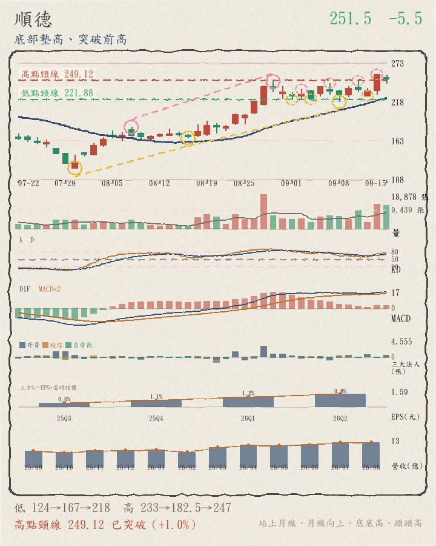
今天帶量收黑、站上月線 223.825，已站上高點頸線 246.5，轉折結構仍是底底高＋頭頭高。
- 月線位置：收盤 251.5 在月線 223.825 之上；5 日線 243.1 也在月線之上（短均在上）；月線向上、5 日線向上
- 量能：成交量是 20 日均量的 1.80 倍，比 20 日均量大不少；收黑卻量增，量價背離
- 關鍵價位：高點頸線 246.5 已站上；最近轉折高點 247（高於 1.8%）；最近轉折低點 218（高於 15.4%）
- 轉折結構：低點 124、167、218 一路墊高 75.8%、高點 233、182.5、247 也一路墊高 4.0%，是底底高＋頭頭高；還沒確認的轉折低點 09-03 222、09-11 226.5；還沒確認的轉折高點 09-10 248、09-14 257（圖上虛線小圈）
區間或轉弱 成交金額 28.62 億・全榜第 61 名（上市第 45 名）
好條件 6/8：站上月線、月線向上、突破頸線、相對大盤強、外資買超、量價攻擊（收紅＋大量）
不好條件 0/8：無
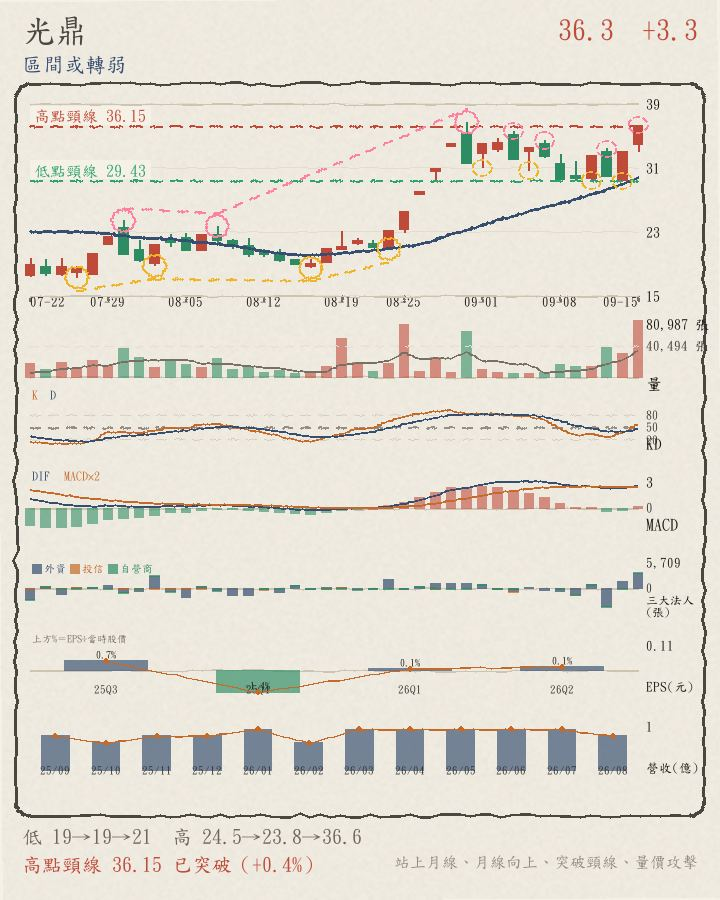
今天帶量收紅、站上月線 29.765，已站上高點頸線 36.15，轉折還沒走出明顯方向。
- 月線位置：收盤 36.3 在月線 29.765 之上；5 日線 32.31 也在月線之上（短均在上）；月線向上、5 日線走平或向下
- 量能：成交量是 20 日均量的 3.56 倍，比 20 日均量大不少；收紅又量增，量價配合
- 關鍵價位：高點頸線 36.15 已站上；最近轉折高點 36.6（低於 0.8%）；最近轉折低點 21（高於 72.9%）
- 轉折結構：低點 18.95、18.7、21 與高點 24.5、23.8、36.6 都沒有明顯遞增，屬於區間震盪或轉弱；還沒確認的轉折低點 09-10 29.45、09-14 29.4；還沒確認的轉折高點 09-11 33.35、09-15 36.3（圖上虛線小圈）
上升趨勢（底底高＋頭頭高） 成交金額 28.13 億・全榜第 62 名（上市第 46 名）
好條件 5/8：站上月線、月線向上、底底高、頭頭高、突破頸線
不好條件 4/8：今日下跌、相對大盤弱、量增下跌（出貨）、外資賣超
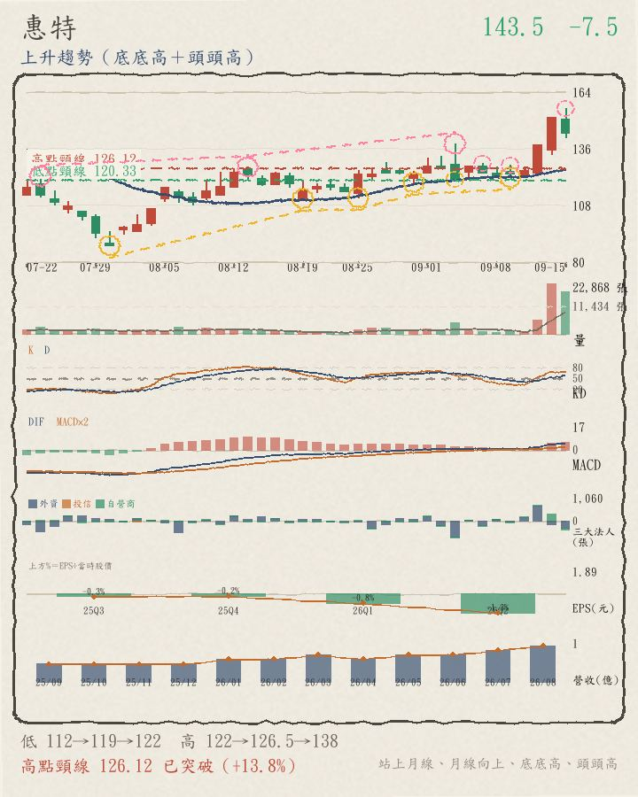
今天帶量收黑、站上月線 125.425，已站上高點頸線 126.12，轉折結構仍是底底高＋頭頭高。
- 月線位置：收盤 143.5 在月線 125.425 之上；5 日線 136.2 也在月線之上（短均在上）；月線向上、5 日線向上
- 量能：成交量是 20 日均量的 6.73 倍，比 20 日均量大不少；收黑卻量增，量價背離
- 關鍵價位：高點頸線 126.12 已站上；最近轉折高點 138（高於 4.0%）；最近轉折低點 121.5（高於 18.1%）
- 轉折結構：低點 111.5、119、121.5 一路墊高 9.0%、高點 122、126.5、138 也一路墊高 13.1%，是底底高＋頭頭高；還沒確認的轉折低點 09-03 120.5；還沒確認的轉折高點 09-09 127.5、09-15 155.5（圖上虛線小圈）
區間或轉弱 成交金額 27.91 億・全榜第 63 名（上市第 47 名）
好條件 2/8：相對大盤強、外資買超
不好條件 3/8：跌破前低、在月線之下、月線下彎
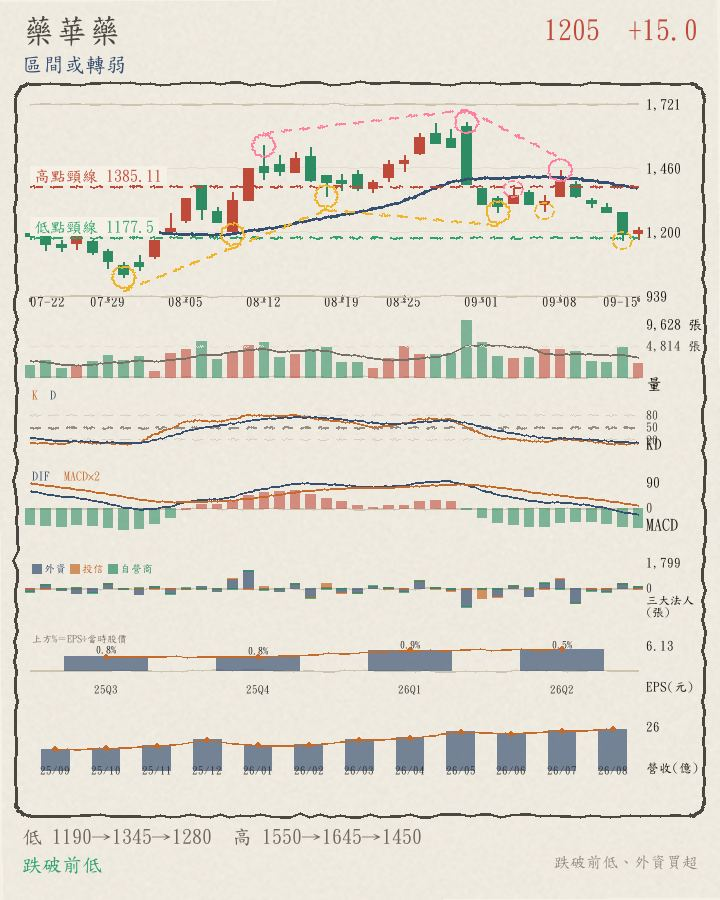
今天收紅、但成交量比平均少、跌破月線 1378.5，跌破前一個轉折低點（高點頸線 1385.11 還在收盤上方），轉折還沒走出明顯方向。
- 月線位置：收盤 1205 在月線 1378.5 之下；5 日線 1268 也在月線之下（短均在下）；月線走平或向下、5 日線走平或向下
- 量能：成交量是 20 日均量的 0.55 倍，比 20 日均量少很多；收紅但量縮，量價背離
- 關鍵價位：高點頸線 1385.11 還沒突破、還在收盤上方 13.0%；最近轉折高點 1450（低於 16.9%）；最近轉折低點 1280（低於 5.9%）
- 轉折結構：低點 1190、1345、1280 與高點 1550、1645、1450 都沒有明顯遞增，屬於區間震盪或轉弱；還沒確認的轉折低點 09-07 1285、09-14 1165；還沒確認的轉折高點 09-03 1375（圖上虛線小圈）
底部墊高、未過前高 成交金額 26.98 億・全榜第 64 名（上市第 48 名）
好條件 3/8：月線向上、底底高、外資買超
不好條件 5/8：跌破前低、今日下跌、相對大盤弱、在月線之下、收盤跌破前一日低點
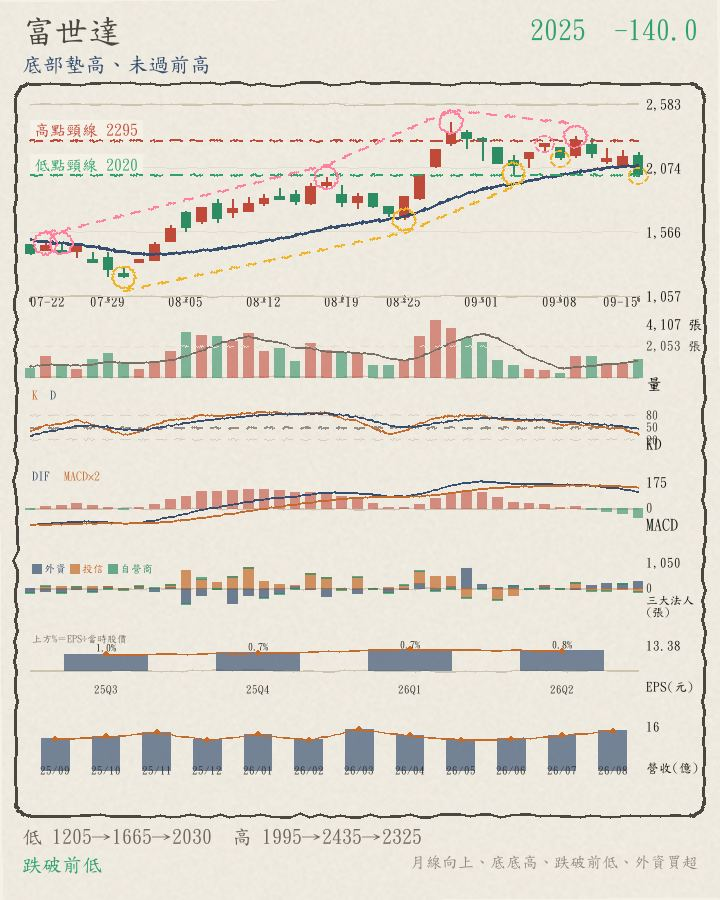
今天收黑、成交量也比平均少、跌破月線 2090.25，跌破前一個轉折低點（高點頸線 2295 還在收盤上方），底部還在墊高（但高點沒同步創高）。
- 月線位置：收盤 2025 在月線 2090.25 之下；5 日線 2165 也在月線之上（短均在上）；月線向上、5 日線走平或向下
- 量能：成交量是 20 日均量的 0.78 倍，比 20 日均量少很多
- 關鍵價位：高點頸線 2295 還沒突破、還在收盤上方 11.8%；最近轉折高點 2325（低於 12.9%）；最近轉折低點 2030（低於 0.2%）
- 轉折結構：低點 1205、1665、2030 墊高 68.5%（底底高），但高點 1995、2435、2325 沒有同步創高；還沒確認的轉折低點 09-08 2145、09-15 2010；還沒確認的轉折高點 09-07 2265（圖上虛線小圈）
底部墊高、未過前高 成交金額 26.67 億・全榜第 65 名（上市第 49 名）
好條件 4/8：月線向上、底底高、相對大盤強、外資買超
不好條件 1/8：在月線之下
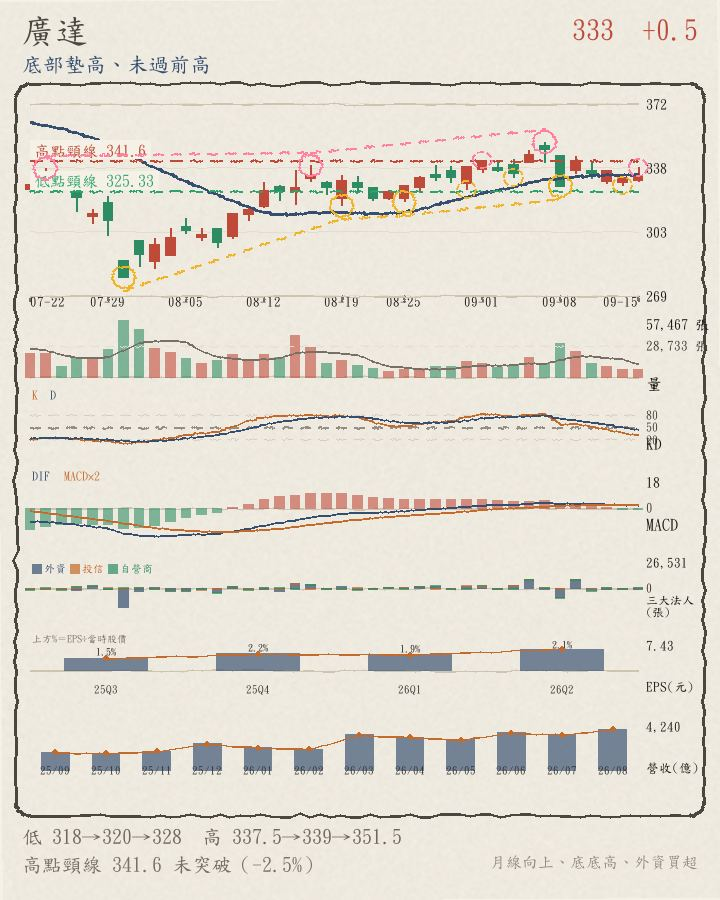
今天收紅、但成交量比平均少、跌破月線 334.225，離高點頸線 341.6 還差 2.5%，底部還在墊高（但高點沒同步創高）。
- 月線位置：收盤 333 在月線 334.225 之下；5 日線 336 也在月線之上（短均在上）；月線向上、5 日線走平或向下
- 量能：成交量是 20 日均量的 0.59 倍，比 20 日均量少很多；收紅但量縮，量價背離
- 關鍵價位：高點頸線 341.6 還沒突破，差 2.5%；最近轉折高點 351.5（低於 5.3%）；最近轉折低點 328（高於 1.5%）
- 轉折結構：低點 317.5、319.5、328 墊高 3.3%（底底高），但高點 337.5、339、351.5 沒有同步創高；還沒確認的轉折低點 09-03 332.5、09-14 328.5；還沒確認的轉折高點 09-01 342、09-15 338（圖上虛線小圈）
區間或轉弱 成交金額 25.99 億・全榜第 66 名（上市第 50 名）
好條件 0/8：無
不好條件 6/8：今日下跌、相對大盤弱、在月線之下、外資賣超、月線下彎、收盤跌破前一日低點
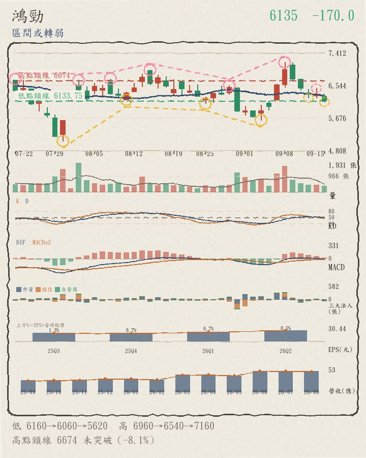
今天收黑、成交量也比平均少、跌破月線 6285.5，離高點頸線 6674 還差 8.1%，轉折還沒走出明顯方向。
- 月線位置：收盤 6135 在月線 6285.5 之下；5 日線 6389 也在月線之上（短均在上）；月線走平或向下、5 日線向上
- 量能：成交量是 20 日均量的 0.60 倍，比 20 日均量少很多
- 關鍵價位：高點頸線 6674 還沒突破，差 8.1%；最近轉折高點 7160（低於 14.3%）；最近轉折低點 5620（高於 9.2%）
- 轉折結構：低點 6160、6060、5620 與高點 6960、6540、7160 都沒有明顯遞增，屬於區間震盪或轉弱；還沒確認的轉折低點 09-11 6210、09-15 6105；還沒確認的轉折高點 09-14 6470（圖上虛線小圈）
區間或轉弱 成交金額 164.06 億・全榜第 5 名（上櫃第 1 名）
好條件 5/8：站上月線、月線向上、相對大盤強、外資買超、量價攻擊（收紅＋大量）
不好條件 0/8：無
今天帶量收紅、站上月線 429.85，離高點頸線 484.5 還差 6.3%，轉折還沒走出明顯方向。
- 月線位置：收盤 454 在月線 429.85 之上；5 日線 452.2 也在月線之上（短均在上）；月線向上、5 日線向上
- 量能：成交量是 20 日均量的 1.29 倍，比 20 日均量大不少；收紅又量增，量價配合
- 關鍵價位：高點頸線 484.5 還沒突破，差 6.3%；最近轉折高點 478（低於 5.0%）；最近轉折低點 438.5（高於 3.5%）
- 轉折結構：低點 351、349.5、438.5 與高點 492、492、478 都沒有明顯遞增，屬於區間震盪或轉弱；還沒確認的轉折低點 09-08 440、09-14 420；還沒確認的轉折高點 09-15 476（圖上虛線小圈）
底部墊高、未過前高 成交金額 130.26 億・全榜第 10 名（上櫃第 2 名）
好條件 2/8：月線向上、底底高
不好條件 5/8：今日下跌、相對大盤弱、在月線之下、量增下跌（出貨）、外資賣超
今天帶量收黑、跌破月線 484.925，離高點頸線 532.5 還差 9.5%，底部還在墊高（但高點沒同步創高）。
- 月線位置：收盤 482 在月線 484.925 之下；5 日線 506.4 也在月線之上（短均在上）；月線向上、5 日線向上
- 量能：成交量是 20 日均量的 1.40 倍，比 20 日均量大不少；收黑卻量增，量價背離
- 關鍵價位：高點頸線 532.5 還沒突破，差 9.5%；最近轉折高點 535（低於 9.9%）；最近轉折低點 469.5（高於 2.7%）
- 轉折結構：低點 392、399、469.5 墊高 19.8%（底底高），但高點 462、564、535 沒有同步創高；還沒確認的轉折低點 09-14 477；還沒確認的轉折高點 09-14 530（圖上虛線小圈）
剛突破前高 成交金額 128.52 億・全榜第 11 名（上櫃第 3 名）
好條件 6/8：站上月線、月線向上、頭頭高、相對大盤強、外資買超、量價攻擊（收紅＋大量）
不好條件 0/8：無
今天帶量收紅、站上月線 180.6，離高點頸線 203.75 還差 1.8%，高點還在墊高（但底部沒同步墊高）。
- 月線位置：收盤 200 在月線 180.6 之上；5 日線 191.7 也在月線之上（短均在上）；月線向上、5 日線向上
- 量能：成交量是 20 日均量的 1.81 倍，比 20 日均量大不少；收紅又量增，量價配合
- 關鍵價位：高點頸線 203.75 還沒突破，差 1.8%；最近轉折高點 203（低於 1.5%）；最近轉折低點 152（高於 31.6%）
- 轉折結構：高點 171、203、203 墊高 1.7%（頭頭高），但低點 113.5、155.5、152 沒有同步墊高；還沒確認的轉折低點 09-03 174、09-14 171；還沒確認的轉折高點 09-04 202.5、09-15 206.5（圖上虛線小圈）
剛突破前高 成交金額 90.65 億・全榜第 21 名（上櫃第 4 名）
好條件 1/8：頭頭高
不好條件 6/8：今日下跌、相對大盤弱、在月線之下、量增下跌（出貨）、外資賣超、月線下彎
今天帶量收黑、跌破月線 1429，離高點頸線 1431.67 還差 4.3%，高點還在墊高（但底部沒同步墊高）。
- 月線位置：收盤 1370 在月線 1429 之下；5 日線 1377 也在月線之下（短均在下）；月線走平或向下、5 日線向上
- 量能：成交量是 20 日均量的 1.21 倍，比 20 日均量大不少；收黑卻量增，量價背離
- 關鍵價位：高點頸線 1431.67 還沒突破，差 4.3%；最近轉折高點 1430（低於 4.2%）；最近轉折低點 1295（高於 5.8%）
- 轉折結構：高點 1730、1565、1430 墊高 1.4%（頭頭高），但低點 1455、1395、1295 沒有同步墊高；還沒確認的轉折低點 09-09 1315、09-14 1320；還沒確認的轉折高點 09-15 1450（圖上虛線小圈）
上升趨勢（底底高＋頭頭高） 成交金額 86.54 億・全榜第 23 名（上櫃第 5 名）
好條件 6/8：站上月線、月線向上、底底高、頭頭高、相對大盤強、量價攻擊（收紅＋大量）
不好條件 1/8：外資賣超
今天帶量收紅、站上月線 248.925，轉折結構仍是底底高＋頭頭高。
- 月線位置：收盤 294.5 在月線 248.925 之上；5 日線 288.3 也在月線之上（短均在上）；月線向上、5 日線向上
- 量能：成交量是 20 日均量的 1.58 倍，比 20 日均量大不少；收紅又量增，量價配合
- 關鍵價位：最近轉折高點 270.5（高於 8.9%）；最近轉折低點 265.5（高於 10.9%）
- 轉折結構：低點 189.5、190.5、265.5 一路墊高 40.1%、高點 178、230、270.5 也一路墊高 52.0%，是底底高＋頭頭高；還沒確認的轉折低點 09-03 237.5、09-14 272.5；還沒確認的轉折高點 09-11 321、09-15 308（圖上虛線小圈）
區間或轉弱 成交金額 67.63 億・全榜第 27 名（上櫃第 6 名）
好條件 2/8：相對大盤強、外資買超
不好條件 2/8：在月線之下、月線下彎
今天收紅、但成交量比平均少、跌破月線 954.05，離高點頸線 1015.75 還差 10.0%，轉折還沒走出明顯方向。
- 月線位置：收盤 914 在月線 954.05 之下；5 日線 917.6 也在月線之下（短均在下）；月線走平或向下、5 日線走平或向下
- 量能：成交量是 20 日均量的 0.88 倍，比 20 日均量少一些；收紅但量縮，量價背離
- 關鍵價位：高點頸線 1015.75 還沒突破，差 10.0%；最近轉折高點 1015（低於 10.0%）；最近轉折低點 875（高於 4.5%）
- 轉折結構：低點 823、931、875 與高點 1035、1015、1015 都沒有明顯遞增，屬於區間震盪或轉弱；還沒確認的轉折低點 09-08 944、09-14 872；還沒確認的轉折高點 09-01 998、09-15 959（圖上虛線小圈）
上升趨勢（底底高＋頭頭高） 成交金額 63.74 億・全榜第 32 名（上櫃第 7 名）
好條件 7/8：站上月線、月線向上、底底高、頭頭高、突破頸線、相對大盤強、量價攻擊（收紅＋大量）
不好條件 1/8：外資賣超
今天帶量收紅、站上月線 132.34，已站上高點頸線 142.25，轉折結構仍是底底高＋頭頭高。
- 月線位置：收盤 169.5 在月線 132.34 之上；5 日線 158.1 也在月線之上（短均在上）；月線向上、5 日線向上
- 量能：成交量是 20 日均量的 2.05 倍，比 20 日均量大不少；收紅又量增，量價配合
- 關鍵價位：高點頸線 142.25 已站上；最近轉折高點 144（高於 17.7%）；最近轉折低點 123.5（高於 37.2%）
- 轉折結構：低點 62.2、77.9、123.5 一路墊高 98.6%、高點 95.8、140.5、144 也一路墊高 50.3%，是底底高＋頭頭高；還沒確認的轉折低點 08-31 127.5、09-02 130；還沒確認的轉折高點 09-15 176.5（圖上虛線小圈）
高點墊高、底部不穩 成交金額 59.67 億・全榜第 35 名（上櫃第 8 名）
好條件 3/8：月線向上、頭頭高、外資買超
不好條件 4/8：今日下跌、相對大盤弱、在月線之下、收盤跌破前一日低點
今天收黑、成交量也比平均少、跌破月線 3026，離高點頸線 3107.5 還差 13.9%，高點還在墊高（但底部沒同步墊高）。
- 月線位置：收盤 2675 在月線 3026 之下；5 日線 2782 也在月線之下（短均在下）；月線向上、5 日線走平或向下
- 量能：成交量是 20 日均量的 0.56 倍，比 20 日均量少很多
- 關鍵價位：高點頸線 3107.5 還沒突破，差 13.9%；最近轉折高點 3600（低於 25.7%）；最近轉折低點 1450（高於 84.5%）
- 轉折結構：高點 2010、3065、3600 墊高 79.1%（頭頭高），但低點 1668.18、1335、1450 沒有同步墊高；還沒確認的轉折低點 09-04 2980、09-15 2650；還沒確認的轉折高點 09-09 3150、09-14 2830（圖上虛線小圈）
區間或轉弱 成交金額 54.14 億・全榜第 36 名（上櫃第 9 名）
好條件 3/8：站上月線、月線向上、外資買超
不好條件 5/8：跌破前低、今日下跌、相對大盤弱、量增下跌（出貨）、收盤跌破前一日低點
今天帶量收黑、站上月線 1236.55，跌破前一個轉折低點（高點頸線 1470 還在收盤上方），轉折還沒走出明顯方向。
- 月線位置：收盤 1260 在月線 1236.55 之上；5 日線 1350 也在月線之上（短均在上）；月線向上、5 日線走平或向下
- 量能：成交量是 20 日均量的 1.31 倍，比 20 日均量大不少；收黑卻量增，量價背離
- 關鍵價位：高點頸線 1470 還沒突破、還在收盤上方 14.3%；最近轉折高點 1505（低於 16.3%）；最近轉折低點 1300（低於 3.1%）
- 轉折結構：低點 1000、955、1300 與高點 1080、1080、1505 都沒有明顯遞增，屬於區間震盪或轉弱；還沒確認的轉折低點 09-03 1320、09-15 1240；還沒確認的轉折高點 09-10 1440、09-15 1365（圖上虛線小圈）
區間或轉弱 成交金額 53.37 億・全榜第 37 名（上櫃第 10 名）
好條件 1/8：月線向上
不好條件 5/8：今日下跌、相對大盤弱、在月線之下、外資賣超、收盤跌破前一日低點
今天收黑、成交量也比平均少、跌破月線 115.628，離高點頸線 132.29 還差 13.4%，轉折還沒走出明顯方向。
- 月線位置：收盤 114.5 在月線 115.628 之下；5 日線 122.8 也在月線之上（短均在上）；月線向上、5 日線向上
- 量能：成交量是 20 日均量的 0.55 倍，比 20 日均量少很多
- 關鍵價位：高點頸線 132.29 還沒突破，差 13.4%；最近轉折高點 135（低於 15.2%）；最近轉折低點 108.571（高於 5.5%）
- 轉折結構：低點 70.857、56.2856、108.571 與高點 95.1427、89.4284、135 都沒有明顯遞增，屬於區間震盪或轉弱；還沒確認的轉折低點 09-08 117.143、09-15 114.5；還沒確認的轉折高點 09-03 132.857、09-11 129（圖上虛線小圈）
區間或轉弱 成交金額 43.38 億・全榜第 42 名（上櫃第 11 名）
好條件 2/8：相對大盤強、外資買超
不好條件 2/8：在月線之下、月線下彎
今天收紅、但成交量比平均少、跌破月線 108.5，離高點頸線 109.25 還差 3.4%，轉折還沒走出明顯方向。
- 月線位置：收盤 105.5 在月線 108.5 之下；5 日線 106.5 也在月線之下（短均在下）；月線走平或向下、5 日線走平或向下
- 量能：成交量是 20 日均量的 0.73 倍，比 20 日均量少很多；收紅但量縮，量價背離
- 關鍵價位：高點頸線 109.25 還沒突破，差 3.4%；最近轉折高點 119（低於 11.3%）；最近轉折低點 104（高於 1.4%）
- 轉折結構：低點 89.8、103.5、104 與高點 131、117.5、119 都沒有明顯遞增，屬於區間震盪或轉弱；還沒確認的轉折低點 09-08 109、09-14 100；還沒確認的轉折高點 09-01 116、09-15 110.5（圖上虛線小圈）
剛突破前高 成交金額 41.18 億・全榜第 45 名（上櫃第 12 名）
好條件 5/8：站上月線、月線向上、頭頭高、突破頸線、相對大盤強
不好條件 3/8：今日下跌、量增下跌（出貨）、外資賣超
今天帶量收黑、站上月線 96.965，已站上高點頸線 99.15，高點還在墊高（但底部沒同步墊高）。
- 月線位置：收盤 123.5 在月線 96.965 之上；5 日線 117.8 也在月線之上（短均在上）；月線向上、5 日線向上
- 量能：成交量是 20 日均量的 2.35 倍，比 20 日均量大不少；收黑卻量增，量價背離
- 關鍵價位：高點頸線 99.15 已站上；最近轉折高點 98.9（高於 24.9%）；最近轉折低點 84.8（高於 45.6%）
- 轉折結構：高點 163、99.4、98.9 墊高 30.9%（頭頭高），但低點 82.5、81.8、84.8 沒有同步墊高；還沒確認的轉折低點 08-31 87.3；還沒確認的轉折高點 09-15 129.5（圖上虛線小圈）
底部墊高、未過前高 成交金額 38.8 億・全榜第 50 名（上櫃第 13 名）
好條件 1/8：底底高
不好條件 6/8：跌破前低、今日下跌、相對大盤弱、在月線之下、外資賣超、月線下彎
今天收黑、成交量也比平均少、跌破月線 2061.5，跌破前一個轉折低點（高點頸線 2175 還在收盤上方），底部還在墊高（但高點沒同步創高）。
- 月線位置：收盤 1920 在月線 2061.5 之下；5 日線 1999 也在月線之下（短均在下）；月線走平或向下、5 日線走平或向下
- 量能：成交量是 20 日均量的 0.53 倍，比 20 日均量少很多
- 關鍵價位：高點頸線 2175 還沒突破、還在收盤上方 11.7%；最近轉折高點 2160（低於 11.1%）；最近轉折低點 1970（低於 2.5%）
- 轉折結構：低點 1445、1905、1970 墊高 36.3%（底底高），但高點 2215、2195、2160 沒有同步創高；還沒確認的轉折低點 09-15 1900；還沒確認的轉折高點 09-03 2120、09-15 1960（圖上虛線小圈）
區間或轉弱 成交金額 34.2 億・全榜第 56 名（上櫃第 14 名）
好條件 1/8：站上月線
不好條件 4/8：今日下跌、相對大盤弱、外資賣超、月線下彎
今天收黑、成交量也比平均少、站上月線 5395，離高點頸線 5713.33 還差 4.8%，轉折還沒走出明顯方向。
- 月線位置：收盤 5440 在月線 5395 之上；5 日線 5578 也在月線之上（短均在上）；月線走平或向下、5 日線向上
- 量能：成交量是 20 日均量的 0.59 倍，比 20 日均量少很多
- 關鍵價位：高點頸線 5713.33 還沒突破，差 4.8%；最近轉折高點 6060（低於 10.2%）；最近轉折低點 4730（高於 15.0%）
- 轉折結構：低點 4650、5000、4730 與高點 6815、5585、6060 都沒有明顯遞增，屬於區間震盪或轉弱；還沒確認的轉折低點 09-03 5000、09-11 5365；還沒確認的轉折高點 09-11 5755、09-15 5800（圖上虛線小圈）
剛突破前高 成交金額 33.03 億・全榜第 57 名（上櫃第 15 名）
好條件 3/8：站上月線、月線向上、頭頭高
不好條件 4/8：今日下跌、相對大盤弱、外資賣超、收盤跌破前一日低點
今天收黑、成交量也比平均少、站上月線 394.95，離高點頸線 424.75 還差 3.8%，高點還在墊高（但底部沒同步墊高）。
- 月線位置：收盤 408.5 在月線 394.95 之上；5 日線 453.6 也在月線之上（短均在上）；月線向上、5 日線向上
- 量能：成交量是 20 日均量的 0.56 倍，比 20 日均量少很多
- 關鍵價位：高點頸線 424.75 還沒突破，差 3.8%；最近轉折高點 431（低於 5.2%）；最近轉折低點 289（高於 41.3%）
- 轉折結構：高點 351.5、328.5、431 墊高 15.1%（頭頭高），但低點 301、288、289 沒有同步墊高；還沒確認的轉折低點 09-03 393、09-15 407；還沒確認的轉折高點 09-11 496（圖上虛線小圈）
高點墊高、底部不穩 成交金額 29.67 億・全榜第 60 名（上櫃第 16 名）
好條件 6/8：站上月線、月線向上、頭頭高、相對大盤強、外資買超、量價攻擊（收紅＋大量）
不好條件 0/8：無
今天帶量收紅、站上月線 1274.75，離高點頸線 1480 還差 2.0%，高點還在墊高（但底部沒同步墊高）。
- 月線位置：收盤 1450 在月線 1274.75 之上；5 日線 1347 也在月線之上（短均在上）；月線向上、5 日線走平或向下
- 量能：成交量是 20 日均量的 2.52 倍，比 20 日均量大不少；收紅又量增，量價配合
- 關鍵價位：高點頸線 1480 還沒突破，差 2.0%；最近轉折高點 1505（低於 3.7%）；最近轉折低點 1050（高於 38.1%）
- 轉折結構：高點 1250、1460、1505 墊高 20.4%（頭頭高），但低點 843、1050、1050 沒有同步墊高；還沒確認的轉折低點 09-04 1335、09-14 1235；還沒確認的轉折高點 09-07 1495、09-15 1465（圖上虛線小圈）
高點墊高、底部不穩 成交金額 25.29 億・全榜第 67 名（上櫃第 17 名）
好條件 4/8：站上月線、月線向上、頭頭高、外資買超
不好條件 3/8：今日下跌、相對大盤弱、收盤跌破前一日低點
今天收黑、成交量也比平均少、站上月線 3101.25，高點還在墊高（但底部沒同步墊高）。
- 月線位置：收盤 3255 在月線 3101.25 之上；5 日線 3478 也在月線之上（短均在上）；月線向上、5 日線向上
- 量能：成交量是 20 日均量的 0.90 倍，比 20 日均量少一些
- 關鍵價位：最近轉折高點 3935（低於 17.3%）；最近轉折低點 2570（高於 26.7%）
- 轉折結構：高點 2975、3100、3935 墊高 32.3%（頭頭高），但低點 2400、2235、2570 沒有同步墊高；還沒確認的轉折低點 09-03 3235、09-15 3215；還沒確認的轉折高點 09-03 3585（圖上虛線小圈）
區間或轉弱 成交金額 23.38 億・全榜第 68 名（上櫃第 18 名）
好條件 2/8：站上月線、月線向上
不好條件 3/8：今日下跌、相對大盤弱、外資賣超
今天收黑、成交量也比平均少、站上月線 2480.5，離高點頸線 2797.5 還差 6.2%，轉折還沒走出明顯方向。
- 月線位置：收盤 2625 在月線 2480.5 之上；5 日線 2689 也在月線之上（短均在上）；月線向上、5 日線向上
- 量能：成交量是 20 日均量的 0.58 倍，比 20 日均量少很多
- 關鍵價位：高點頸線 2797.5 還沒突破，差 6.2%；最近轉折高點 2875（低於 8.7%）；最近轉折低點 2090（高於 25.6%）
- 轉折結構：低點 2185、1995、2090 與高點 2825、2720、2875 都沒有明顯遞增，屬於區間震盪或轉弱；還沒確認的轉折低點 09-03 2330、09-14 2530；還沒確認的轉折高點 09-01 2640、09-14 2770（圖上虛線小圈）
區間或轉弱 成交金額 22.91 億・全榜第 69 名（上櫃第 19 名）
好條件 1/8：月線向上
不好條件 6/8：跌破前低、今日下跌、相對大盤弱、在月線之下、外資賣超、收盤跌破前一日低點
今天收黑、成交量也比平均少、跌破月線 409.45，跌破前一個轉折低點（高點頸線 419.62 還在收盤上方），轉折還沒走出明顯方向。
- 月線位置：收盤 388.5 在月線 409.45 之下；5 日線 402.1 也在月線之下（短均在下）；月線向上、5 日線走平或向下
- 量能：成交量是 20 日均量的 0.66 倍，比 20 日均量少很多
- 關鍵價位：高點頸線 419.62 還沒突破、還在收盤上方 7.4%；最近轉折高點 428（低於 9.2%）；最近轉折低點 390.5（低於 0.5%）
- 轉折結構：低點 375、407、390.5 與高點 437、459.5、428 都沒有明顯遞增，屬於區間震盪或轉弱；還沒確認的轉折低點 08-31 407、09-15 385；還沒確認的轉折高點 09-01 417.5、09-03 419.5（圖上虛線小圈）
區間或轉弱 成交金額 21.71 億・全榜第 70 名（上櫃第 20 名）
好條件 2/8：相對大盤強、外資買超
不好條件 3/8：今日下跌、在月線之下、月線下彎
今天收黑、成交量也比平均少、跌破月線 180.05，離高點頸線 186.83 還差 5.8%，轉折還沒走出明顯方向。
- 月線位置：收盤 176 在月線 180.05 之下；5 日線 177.7 也在月線之下（短均在下）；月線走平或向下、5 日線走平或向下
- 量能：成交量是 20 日均量的 0.82 倍，比 20 日均量少很多
- 關鍵價位：高點頸線 186.83 還沒突破，差 5.8%；最近轉折高點 187.5（低於 6.1%）；最近轉折低點 173（高於 1.7%）
- 轉折結構：低點 165、173.5、173 與高點 187.5、187.5、187.5 都沒有明顯遞增，屬於區間震盪或轉弱；還沒確認的轉折低點 09-08 179.5、09-14 170；還沒確認的轉折高點 09-01 185、09-15 185.5（圖上虛線小圈）